Interní srovnání úprav podle připomínek p. Sládka z 18. 11. Táhni posuvníkem. U každého snímku zvol Beru / Vrátit originál / Upravit, dole zkopíruj výsledek do chatu. Celkem 62 snímků.
Reálné fotky – retuše 25
1dělal: Opus
PŘEDPO
Proč: p. Sládek (formulář, fotky): „č1 – ano, vyretušovat křoví, Ivan to teď vytrhá“ · Franta 18. 11. (oprava): trávník i napravo od brány, realističtější tráva, bez nerovností u domu
Co se změnilo: pás mezi podezdívkou plotu a silnicí vlevo od brány → rovný, krátce sečený travnatý pás až k domu, bez nerovností a schodů u paty podezdívky (pata podezdívky rovná); travnatý cíp vpravo od brány pod pilířem s elektroměry → stejná upravená tráva až k hraně silnice; barva a zrno trávy srovnané se skutečnou trávou u cesty vlevo (realističtější než minule)
Výhrada: Tráva vpravo pod pilířem je o něco rovnoměrnější než přirozený pás u cesty vlevo. Spodních ~20 px bílé podezdívky mezi x 1000–1350 je převzato z generace (rovná pata) – bez viditelného švu.
3dělal: Opus
PŘEDPO
Proč: p. Sládek (formulář, fotky): „3 – ano, doplnit trávu?“ · Franta 18. 11. (oprava): vymazat kabel
Co se změnilo: auto vymazané (prázdný příjezd, dlažba dokreslená ve stejném vzoru); kabel pryč úplně (příjezd, dlažba, trávník); bordel před garáží pryč (hlína, listí, kbelík a košťata u bočních dveří); v mezeře mezi konci dvou opěrných zdí, kudy vedl kabel z průchodu na dlažbu, naznačené jednoduché betonové schůdky (světlé jako krycí desky zdí); tmavá kůra vlevo od malého chodníčku u domu a pás tmavé kůry podél opěrné zdi u pravého plotu; holá hlína vpravo dole → trávník (z minulé verze)
Výhrada: Schůdky jsou jen naznačené (v mezeře je vidět horní stupeň/podesta, zbytek je za nízkou zdí); generace u nich zároveň srovnala odlomený konec krycí desky vysoké zdi a konec nízké zdi. Dlažba příjezdu v místě auta a stín je domyšlený. Pás kůry u pravého plotu je nový záhon (v originále tráva až ke zdi), u paty zdi dosypaný kůrou z téže generace; spodní okraj zdi je z originálu. Malá rezavá skvrna u odvodňovacího žlabu vlevo zůstala (je i v originále). Zelený odlesk objektivu v trávníku zůstal (je i v originále).
7dělal: Sonnet
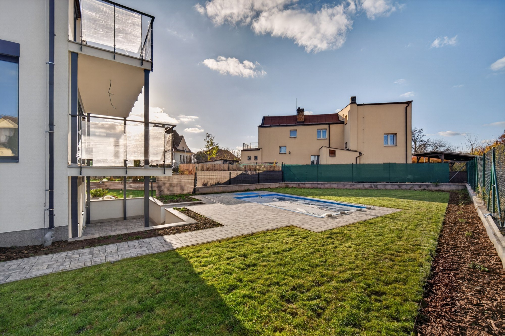
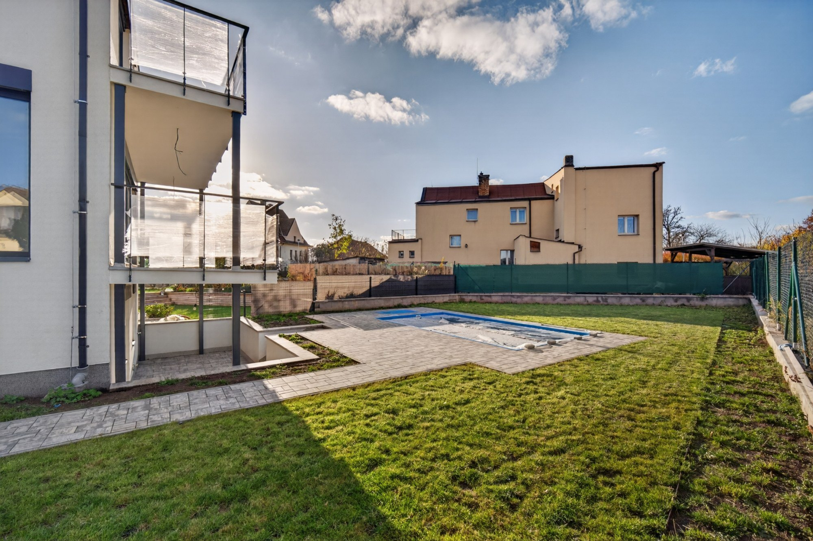
PŘEDPO
Proč: p. Sládek (formulář, fotky): „7 – Ivan vytrhá plevel a zasype to kůrou – všude, mimo trávu, 8–12 dtto“
Co se změnilo: záhony u domu a pruh u pravého plotu (hlína, plevel) → tmavá kůra
Výhrada: Kůra u pravého plotu je výrazně strukturovaná, mírně jiné zrno než okolí; drobné rostlinky v kůře vpravo; bez vymyšlených staveb.
8dělal: Opus
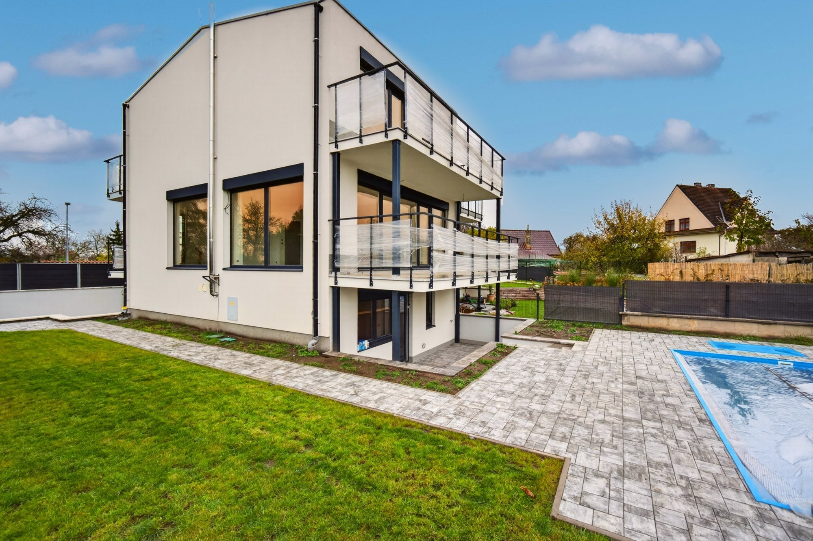
PŘEDPO
Proč: p. Sládek (formulář, fotky): „7 – Ivan vytrhá plevel a zasype to kůrou – všude, mimo trávu, 8–12 dtto“ · Franta 18. 11. (oprava): zasypat pořádně (trsy na rohu), smazat lahve na suterénním okně
Co se změnilo: záhon u domu zasypaný tmavou kůrou až do rohů, vyvýšený záhon vpravo kůrou; NOVĚ i úzký pás u paty zídky s tmavou zástěnou u bazénu po celé délce až k pravému okraji tmavou kůrou (stejný odstín jako u domu, jako na 09); revizní krytky v záhonu u domu vrácené z originálu (dvě hranaté); láhve za sklepním oknem vymazané
Výhrada: Krytky jsou z originálu, kolem nich kůra z generace (tenký okraj původní trávy kolem krytek do 3 px). Horní hrana kůry u paty domu je mírně zvlněná (kopečky kůry, schváleno dřív). U pravého konce pásu u bazénu zmizelo pár stébel trávy přes patu zídky (zídka tam z generace, bez švu).
9dělal: Opus
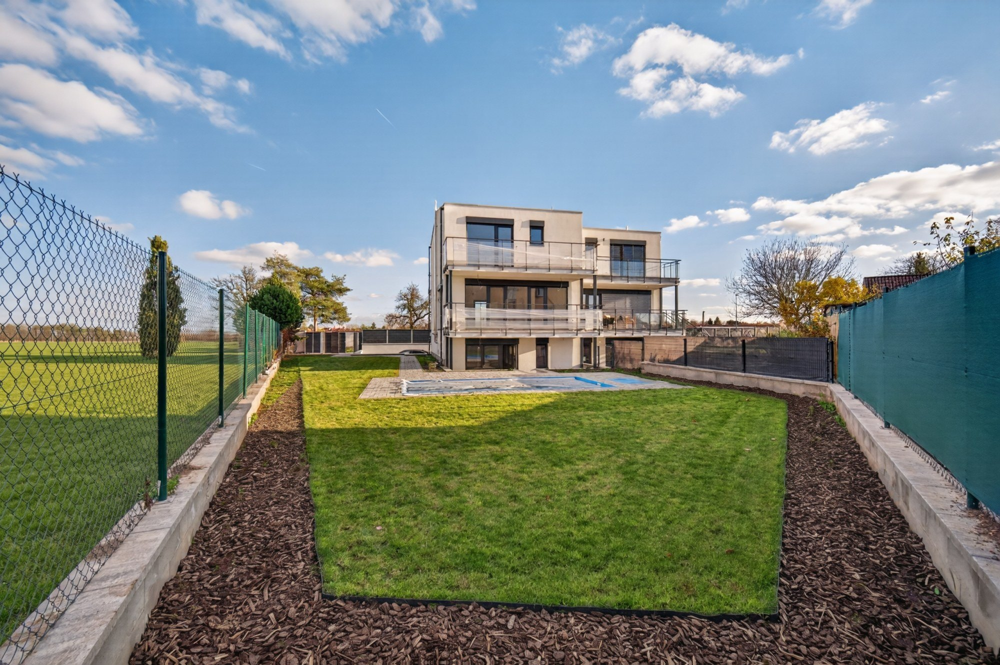
PŘEDPO
Proč: p. Sládek (formulář, fotky): „7 – Ivan vytrhá plevel a zasype to kůrou – všude, mimo trávu, 8–12 dtto“ · Franta: „hromadu hlíny dej všude pryč“ (sjednocení sady)
Co se změnilo: záhony podél obou opěrných zdí a před trávníkem → tmavá kůra (beze změny, schváleno); za plotem vlevo celá hromada hlíny včetně vrcholu pryč → rovný sečený trávník souseda, v dálce jen nízká linie stromů a nebe; štíhlý jehličnan za prvním sloupkem zůstal na místě; ŽÁDNÝ dům ani střecha (oprava nálezů 1 a 3 auditu)
Výhrada: Trávník souseda a vzdálená linie stromů jsou domyšlené (rovina místo hromady). Spodní část jehličnanu (pod úrovní hromady) je domyšlená generací. Pletivo přes trávník je v polygonu z generace (stejný vzor ok, mírně čistší než originál).
10dělal: Opus
PŘEDPO
Proč: p. Sládek (formulář, fotky): „7 – Ivan vytrhá plevel a zasype to kůrou – všude, mimo trávu, 8–12 dtto“ · Franta: „hromadu hlíny dej všude pryč“ (sjednocení sady) · Franta 18. 11. (oprava): hrouda nad plotem → oříznout zleva o ~25 %, kůra podél plotu a chodníčku
Co se změnilo: OŘÍZNUTO zleva o 25 % (640 px, výsledek 1920×1704, ořez až po vložení, bezeztrátově) – pryč hrouda i dokreslování domu vlevo; za pletivem vlevo místo hromady rovný trávník (sloupky a vzpěra plotu z originálu); pás tmavé kůry podél celé paty levé opěrné zdi a podél pravé zdi až k domu (u chodníčku vpravo) dosypaný pořádně
Výhrada: Trávník za plotem je domyšlený (rovina u sousedů). Kůra u levé zdi je pás cca 1 m – záhon tam v originále nebyl, je to nový pás kůry podle připomínky.
11dělal: Opus
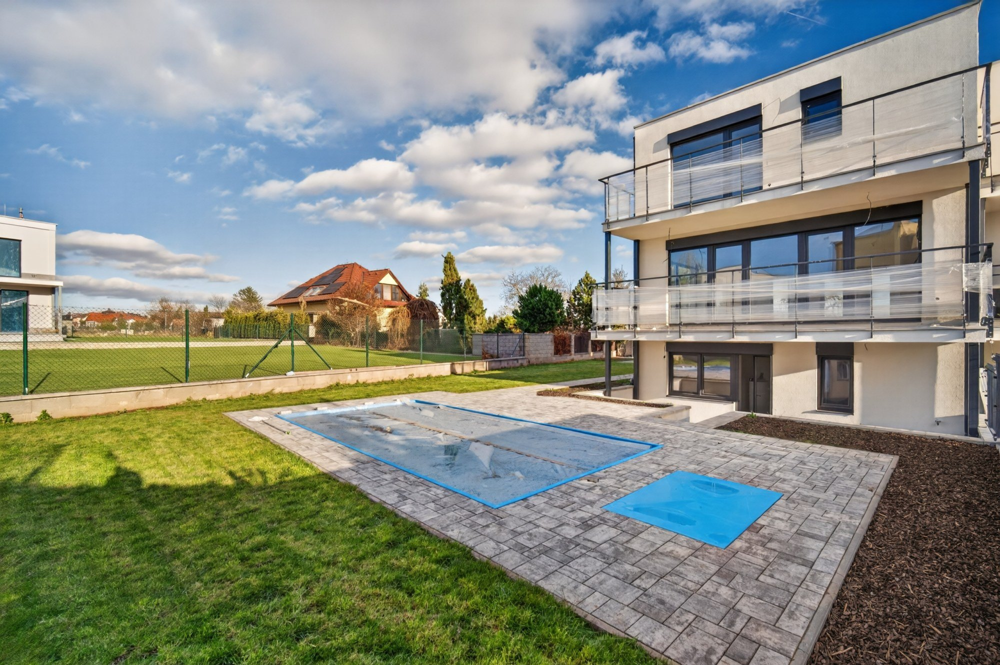
PŘEDPO
Proč: p. Sládek (formulář, fotky): „7 – Ivan vytrhá plevel a zasype to kůrou – všude, mimo trávu, 8–12 dtto“ · Franta: „hromadu hlíny dej všude pryč“ (sjednocení sady) · Franta 18. 11. (oprava): kůra i podél cestičky vpravo, plot a tráva ve správné perspektivě
Co se změnilo: plot vlevo celý z ORIGINÁLU (sloupky, vzpěry, patky – zámek po barvě); za ním místo hromady rovný trávník ve správné perspektivě (úzký pás za zdí, za ním vzdálené živé ploty, domy a stromy, žádná zelená stěna); záhon vpravo u bazénu zasypaný tmavou kůrou až k obrubníku (trsy přes obrubník pryč, obrubník čistý a rovný) i k domu; úzký záhon podél cestičky u domu tmavou kůrou
Výhrada: Výhled za plotem (rovný trávník souseda, vzdálené střechy a stromy) je domyšlený. Kůra v úzkém záhonu u cestičky je o odstín světlejší a v rozích zůstalo pár drobných lístků.
12dělal: Opus
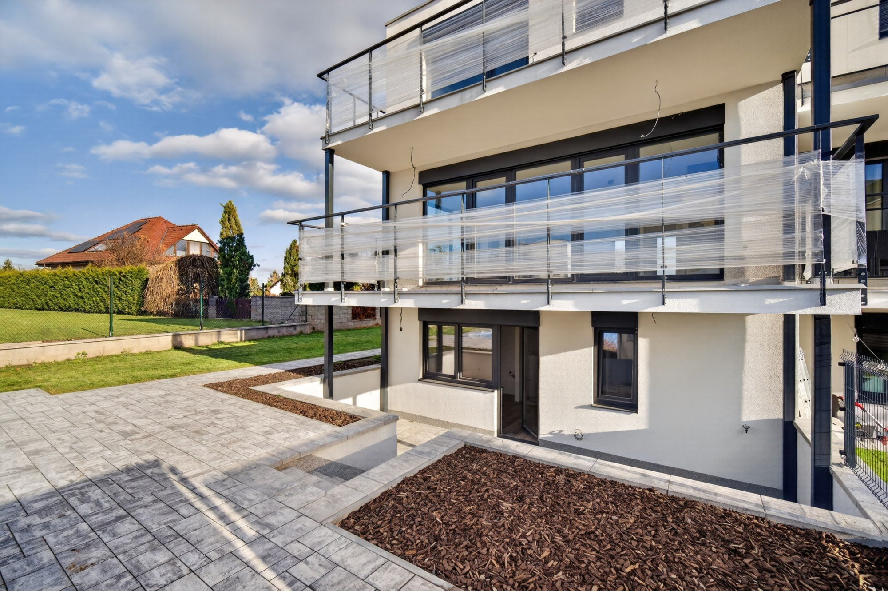
PŘEDPO
Proč: p. Sládek (formulář, fotky): „7 – Ivan vytrhá plevel a zasype to kůrou – všude, mimo trávu, 8–12 dtto“ · Franta: „hromadu hlíny dej všude pryč“ (sjednocení sady) · Franta 18. 11. (oprava): kůra i u L cestičky, plot rovně
Co se změnilo: za plotem celá hromada pryč → rovný sečený trávník souseda; podél jeho vzdálené strany souvislý tmavě zelený živý plot ~2 m, který zakrývá přízemí skutečného domu s červenou střechou (přízemí se nedomýšlí); vlevo nad plotem jen nebe – ŽÁDNÝ vymyšlený dům ani přístřešek (oprava nálezu 4 auditu); střecha, štít a okna podkroví, vrba, keř, jehličnany a šedá zeď vpravo z originálu; sloupky plotu a horní hrana zdi z originálu; záhony s kůrou beze změny (schváleno)
Výhrada: Živý plot je nový (domyšlený) prvek na pozemku souseda – zakrývá místo, kde přízemí domu není na originálu vidět. Mezi holým keřem a vrbou je v živém plotu malá mezera s prosvítajícím keřem (bez zdi). Pletivo v polygonu z generace.
13dělal: Opus
PŘEDPO
Proč: p. Sládek (formulář, fotky): „13 – odstranit hromadu“ · Franta 18. 11. (oprava): zahrada jako u druhého domu
Co se změnilo: sousední pozemek za plotem (hromada hlíny) → hotová zahrada bílého domu ve stylu schválených 7, 9 a kolo6: rovný sečený trávník, podél plotu pás tmavé kůry s levandulemi a okrasnými travami; dokreslené přízemí bílého domu (okna); plot (sloupky, vzpěry) a opěrná zeď z originálu; naše záhony kůrou jako dřív
Výhrada: Celá zahrada za plotem je domyšlená (sousedův pozemek): přízemí bílého domu, vpravo nový přízemní dům s šedou střechou a sousedův boční plot, keře v kůře. Bez bazénu a cest.
48dělal: GPT-6 (Astra)
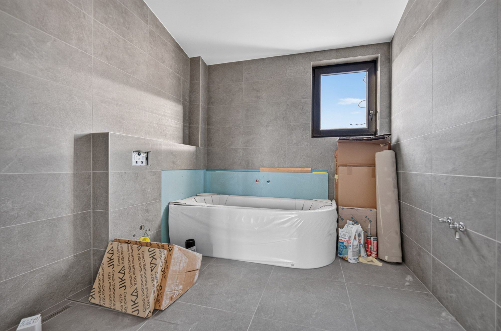
PŘEDPO
Proč: p. Sládek (formulář, fotky): „48–49 Ivan lépe uklidí“ · Franta: „vyretušuj ty krabice, trošku to tam zesvětli, ať to vypadá víc profi“ · Franta 18. 11. (oprava): smazat vše kromě vany → vzata verze z ChatGPT
Co se změnilo: krabice a všechny volné věci pryč, zůstala jen vana a pevná sanita; zesvětleno
Výhrada: celý obraz je generovaný (ne vložený do originálu) – zkontrolovat obklad a armatury proti originálu
49dělal: GPT-6 (Astra)
PŘEDPO
Proč: p. Sládek (formulář, fotky): „48–49 Ivan lépe uklidí“ · Franta: „vyretušuj ty krabice, trošku to tam zesvětli, ať to vypadá víc profi“ · Franta 18. 11. (oprava): smazat vše kromě vany → vzata verze z ChatGPT
Co se změnilo: krabice a všechny volné věci pryč, zůstala jen vana a pevná sanita; zesvětleno
Výhrada: celý obraz je generovaný (ne vložený do originálu) – zkontrolovat obklad a armatury proti originálu
54dělal: Opus
PŘEDPO
Proč: p. Sládek (formulář, fotky): „54 – A s retušemi záhonů, bordelu před plotem a hromady (ta se mi zdá nejlépe použitelná)“ · Franta 18. 11. (oprava): hromada na vedlejším pozemku, zelenější trávník před domem
Co se změnilo: pás u silnice: souvislý trávník po celé délce, i pod a za stromem, plevel a páska u zdi pryč; audit A2 19. 11.: vlevo dole pruh štěrku/hlíny mezi trávníkem a asfaltem dozeleněn až k asfaltu (x 0–~770, k okraji trávníku pod korunou stromu přirozeným obloukem); trávník u domu C–D–E sjednocen – obdélníkový šev (svislá hrana x≈9400, vodorovná y≈3240) a šedý useknutý flek na jeho konci pryč, flek převzat trávou; podél plotu na naší straně pás tmavé kůry; nedozelená plocha za brankou dozeleněna; kabel a zásuvková skříň před garáží a kabel přes zídku pryč (zeď po kabelu čistá); zbytek hromady, palety a prkna před terasami CDE → trávník (+ dřívější: hromada u sousedů → trávník, záhon u domu kůra)
Výhrada: Trávník u sousedů a pás u silnice je domyšlený obsah. Pod korunou stromu (x ~770–1700) zůstal u asfaltu pruh štěrku – větvičky přes něj nejdou od štěrku spolehlivě oddělit a 2. pokus generace selhal; trávník tam končí přirozeným obloukem. Dozeleněný pruh vlevo je zrcadlová kopie trávníku nad ním (při 1:1 nenápadné, hrana k asfaltu čistá, bez trsů). Pod korunou stromu je tráva z generace a větve z originálu – při zvětšení místy měkký přechod. Na zdi za plotem u x≈7345, y≈5790 zůstala drobná tmavá čárka (~15 px) po konci kabelu. Pod stříškou u pilíře zůstaly z originálu tvárnice a paleta.
55dělal: Opus
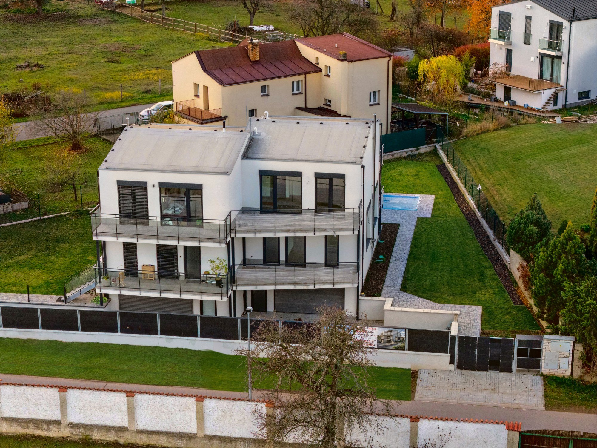
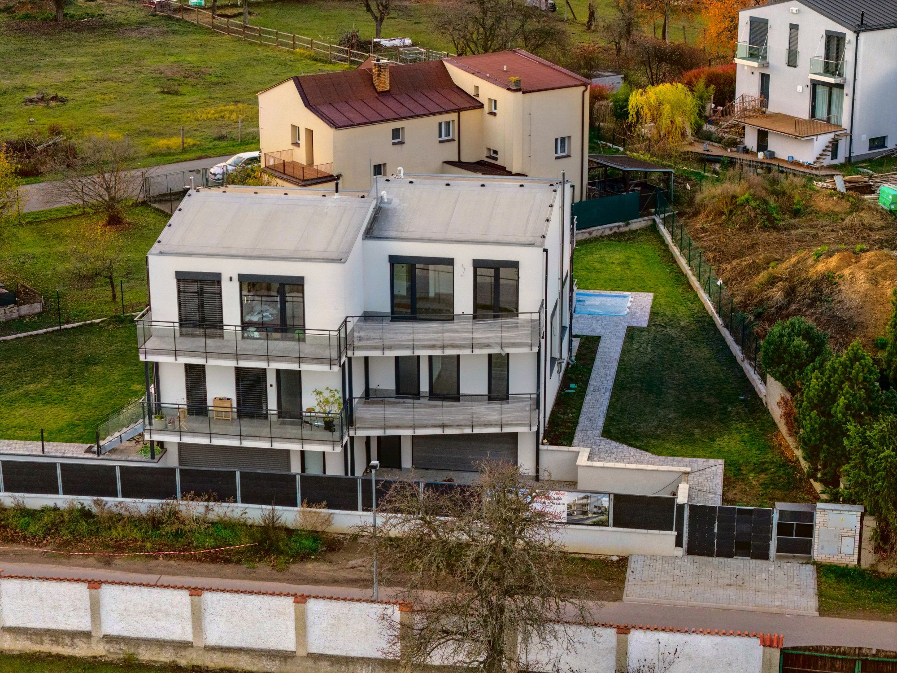
PŘEDPO
Proč: p. Sládek (formulář, fotky): „55, 56, 57, 58, 59 – A dtto“ (= retuše záhonů, bordelu před plotem a hromady) · Franta 18. 11. (oprava): tráva před domem i za stromem
Co se změnilo: pás u silnice: souvislý trávník po celé délce až k asfaltu, i pod a za stromem; podél plotu na naší straně pás tmavé kůry, trávník na zahradě dozeleněn; kabel přes zídku a dlažbu před garáží pryč (+ dřívější: hromada u sousedů → trávník, záhon u domu kůra)
Výhrada: Pod korunou stromu tráva z generace, větve z originálu (měkký přechod při zvětšení). Kůra je o něco tmavší než na fotkách ze země.
56dělal: Opus
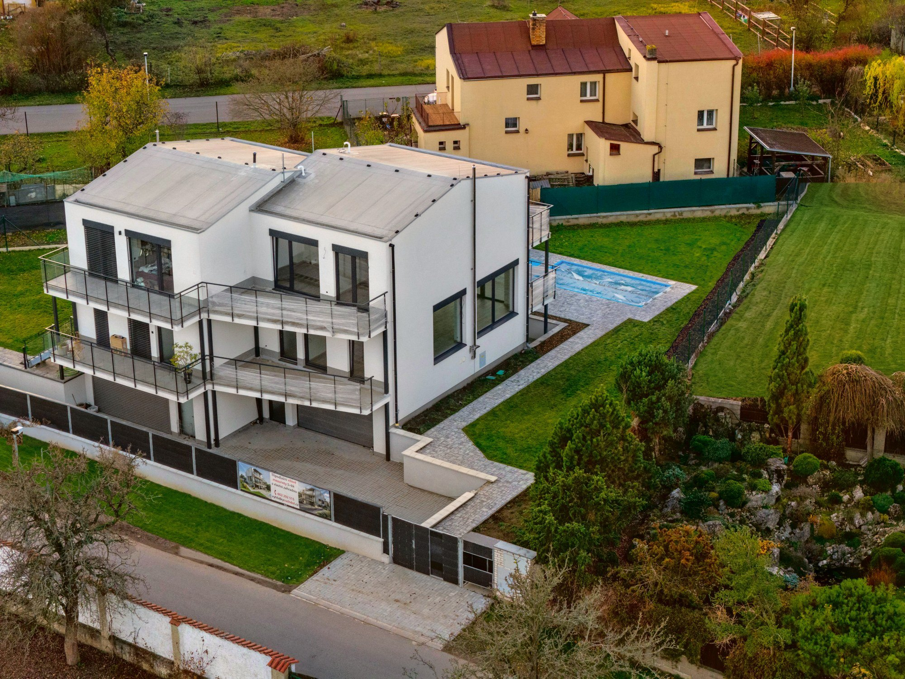
PŘEDPO
Proč: p. Sládek (formulář, fotky): „55, 56, 57, 58, 59 – A dtto“ (= retuše záhonů, bordelu před plotem a hromady) · Franta 18. 11. (oprava): tráva před domem, hlavně za stromem
Co se změnilo: pás u silnice: souvislý trávník po celé délce až k asfaltu, i pod a za stromem, plevel u zdi pryč; podél plotu na naší straně pás tmavé kůry; trávník na zahradě sjednocený, souvislý zelený (plot a sloupky z originálu); kabely, listí a skvrny na dlažbě před garáží pryč (+ dřívější: hromada a svah u sousedů → trávník, záhon u domu kůra)
Výhrada: Zásuvka u paty zdi před garáží zůstala (je to pevná součást), kabel z ní je pryč. Pod stromem u silnice tráva z generace, větve z originálu (měkký přechod při zvětšení). Trávník na zahradě je převzatý z generace jen uvnitř (plot NB posunul – plot i pás u plotu z originálu).
57dělal: Opus
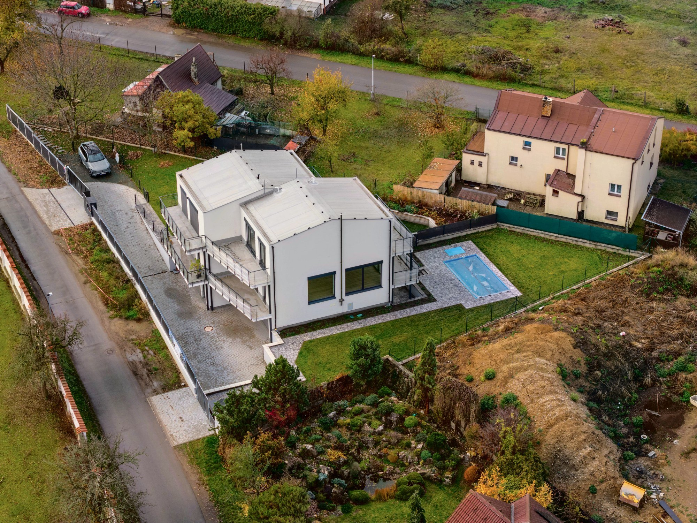
PŘEDPO
Proč: p. Sládek (formulář, fotky): „55, 56, 57, 58, 59 – A dtto“ (= retuše záhonů, bordelu před plotem a hromady)
Co se změnilo: podél plotu na naší straně pás tmavé kůry po celé délce; kabel na dlažbě před domem pryč; OPRAVA 19. 11. (audit, nález 5): tmavý sokl domu a obě víka revize znovu z originálu (zámek), kůra jen pod soklem, šev u x≈4200 pryč; drobný nález 19: hrana trávníku u vrby nahrazena nepravidelným přechodem (+ dřívější: hromada a rumiště u sousedů → trávník, pás u silnice → tráva)
Výhrada: Trávník u sousedů domyšlený (rovný, bez valu). Kůra pod soklem je o odstín tmavší než původní hlína vedle vík revize (víka a jejich okolí jsou z originálu).
58dělal: Opus
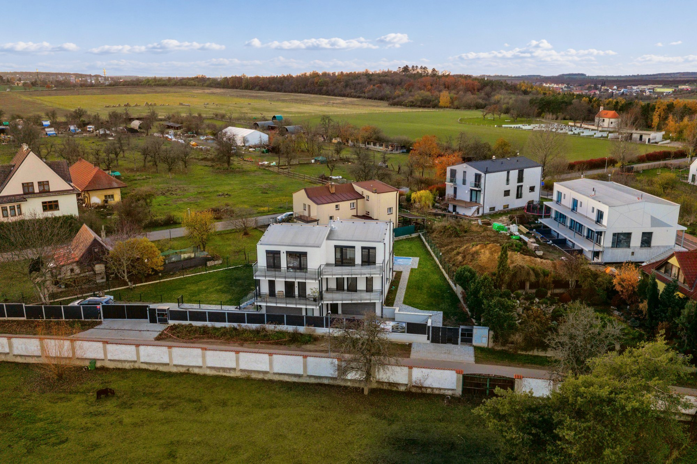
PŘEDPO
Proč: p. Sládek (formulář, fotky): „55, 56, 57, 58, 59 – A dtto“ (= retuše záhonů, bordelu před plotem a hromady) · Franta 18. 11. (oprava): tráva za stromem, bordel u CDE pryč
Co se změnilo: pás u silnice: souvislý trávník po celé délce až k asfaltu, i pod a za stromem; bordel u CDE (prkna, palety, IBC nádrž, balíky, vana, hlína před terasami) → trávník (+ dřívější: val u sousedů → trávník, záhon kůra)
Výhrada: Trávník u CDE a pás u silnice jsou domyšlený obsah; val vlevo od CDE a jehličnan z originálu. V trávníku u sousedů pár drobných tmavých skvrn z dřívější generace.
59dělal: Opus
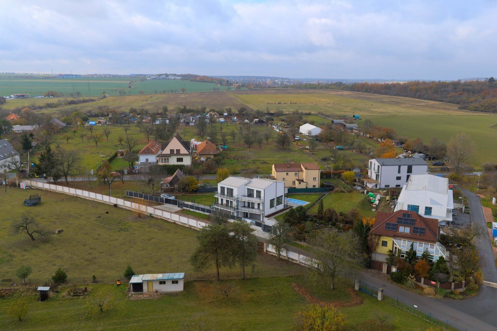
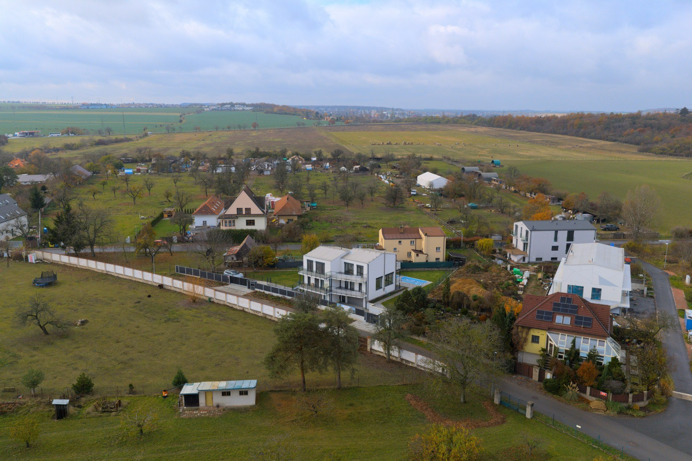
PŘEDPO
Proč: p. Sládek (formulář, fotky): „55, 56, 57, 58, 59 – A dtto“ (= retuše záhonů, bordelu před plotem a hromady) · Franta 18. 11. (oprava): tráva za stromem, bordel u CDE pryč
Co se změnilo: audit A2 19. 11.: záhon u domu B (mezi zdí, rámem světlíku a chodníkem) celý pod tmavou kůrou, oba zelené poklopy na svém místě; podél plotu na naší straně souvislý pás tmavé kůry (~1 m) od zadní zídky až k túji dole, sloupky a vzpěry plotu z originálu; suchý svah hned za plotem → trávník až k podezdívce plotu (i mezi štíhlou tújí a smutečním stromem) + dřívější: hromada hlíny, suchý svah a materiál u sousedů → trávník, část pásu u silnice posekaná tráva
Výhrada: Pás kůry u plotu je složený z kůry, kterou generace nakreslila za plotem (posun po pásu) – textura se po ~110 px může opakovat, při 1:1 nenápadné. Pletivo přes kůru téměř nevidět (tmavé na tmavém), sloupky a vzpěry jsou z originálu. Pod spodní částí plotu (kde byla podezdívka v originálu skrytá suchou trávou) je podezdívka dokreslená generací 59H. U paty štíhlé túje zůstaly drobné zbytky suché trávy z originálu. Trávník na svahu je domyšlený. Starší výhrada platí: vlevo u silnice zůstal pás s plevelem a páskou (59 Franta vzal).
68dělal: Opus
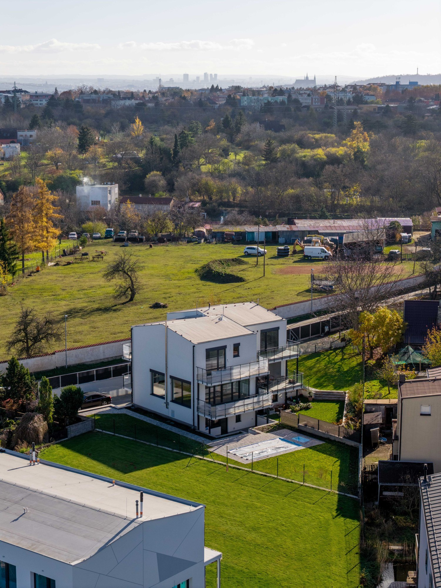
PŘEDPO
Proč: p. Sládek (formulář, fotky): „68, 69, 71–76 – A s retušemi bordelu a hromady“ · Franta 18. 11. (oprava): lépe vymaskovat dům CDE vpravo a plot mezi CDE a B
Co se změnilo: hromada, suchá tráva a materiál u CDE → trávník; dům CDE (atika, stěna, stříška terasy, sloupek) a plot mezi CDE a B z originálu s ostrou hranou; horní levá hrana: pata plotu doplněná generací místo nahrnuté hromady; OPRAVA 19. 11. (audit, nález 6): tmavý hranatý flek vpravo dole pryč (vypnutá ochrana tmavé zeleně, trávník z téže generace), u pravého plotu měkký nepravidelný přechod do původní vegetace
Výhrada: Pod stříškou terasy CDE je tráva (dlažbu, kterou NB vymyslel, přebírá tráva z téže generace). Pata plotu vlevo nahoře je domyšlená (v originále ji kryla hromada).
69dělal: Opus
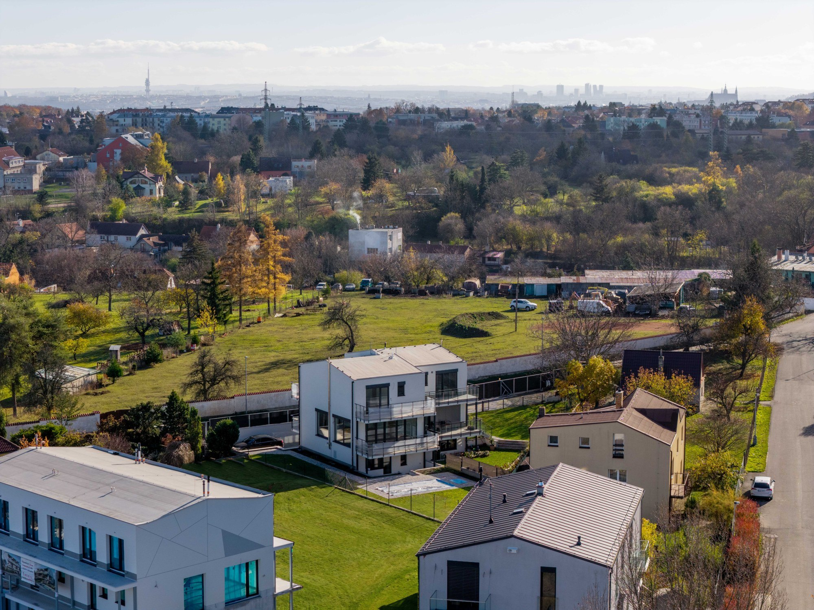
PŘEDPO
Proč: p. Sládek (formulář, fotky): „68, 69, 71–76 – A s retušemi bordelu a hromady“ · Franta 18. 11. (oprava): lépe vymaskovat dům CDE vpravo a plot mezi CDE a B
Co se změnilo: hromada, materiál a plevel u CDE → trávník; dům CDE, obě stříšky teras a sloupky z originálu s ostrou hranou; horní levá hrana: trávník až k patě plotu B / živému plotu, bez zbytku hromady
Výhrada: Vlevo nahoře NB dokreslil nízkou kamennou zídku pokračující od existující zídky (tenké světlé linie v trávníku) – domyšlené. Strom/živý plot, který NB vymyslel vlevo nahoře, nahrazen trávou z téže generace.
71dělal: Sonnet
PŘEDPO
Proč: p. Sládek (formulář, fotky): „68, 69, 71–76 – A s retušemi bordelu a hromady“
Co se změnilo: hromady hlíny, plevel a stavební materiál na sousedním svahu → zelený trávník
Výhrada: Domyšlený plochý trávník místo svahu; horní hrana trávníku k sousedovu dřevu a dřevěné stavbě je mírně zvlněná; materiál sousedů nahoře ponechán.
72dělal: Sonnet
PŘEDPO
Proč: p. Sládek (formulář, fotky): „68, 69, 71–76 – A s retušemi bordelu a hromady“
Co se změnilo: hromady hlíny a stavební materiál na sousedním svahu → zelený trávník
Výhrada: Domyšlený trávník místo svahu; vlevo zůstal pruh původního suchého plevele, horní hrana trávníku zvlněná; materiál sousedů nahoře ponechán.
73dělal: Sonnet
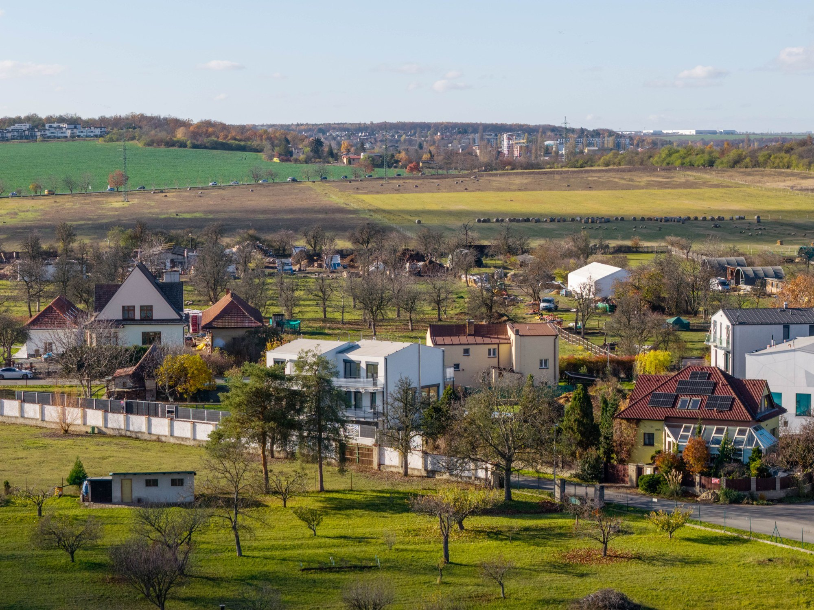
PŘEDPO
Proč: p. Sládek (formulář, fotky): „68, 69, 71–76 – A s retušemi bordelu a hromady“
Co se změnilo: hromada hlíny a rumiště za oplocením sousedů → zelený trávník (malé dvě plochy)
Výhrada: Domyšlený obsah: trávník s nízkou kamennou zídkou a tmavým valem v hloubce; plochy jsou drobné a daleko, tvar trávníku působí mírně uměle.
74dělal: Sonnet
PŘEDPO
Proč: p. Sládek (formulář, fotky): „68, 69, 71–76 – A s retušemi bordelu a hromady“
Co se změnilo: hromada hlíny a suchý svah za sousedním plotem → zelený trávník
Výhrada: Domyšlený trávník s jemnými vlnitými pruhy po sekání, vlevo nepřirozeně zaoblený okraj trávníku jako obrubník; po stranách tvrdší přechod do původního plevele.
75dělal: Opus
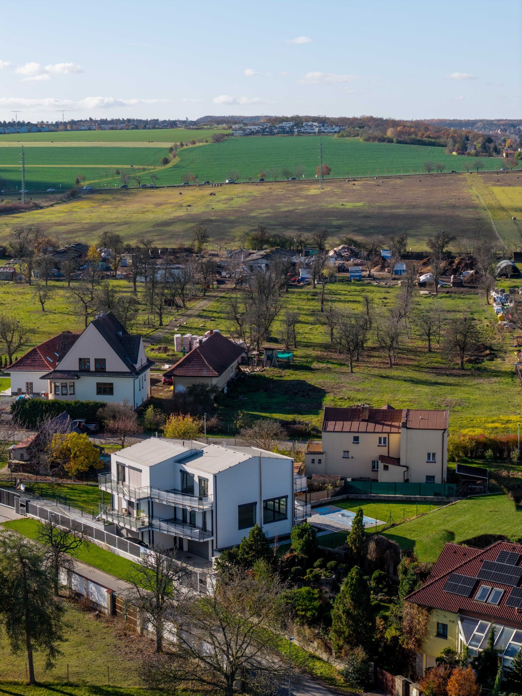
PŘEDPO
Proč: p. Sládek (formulář, fotky): „68, 69, 71–76 – A s retušemi bordelu a hromady“ · Franta 18. 11. (oprava): trávník před domem, pasáž u zahrad CDE
Co se změnilo: pás u silnice: souvislý trávník po celé délce až k asfaltu, i pod stromy; hromada, hroudy, suchý svah, trs suché trávy u zahrad CDE i suchý keř dole u střechy → trávník až k plotu, zahradám a střeše
Výhrada: Trávník u CDE domyšlený. Smuteční strom a keře vlevo dole a pruh stínu u střechy z originálu. Úplně vpravo u okraje fotky (za tújí, kterou NB vymyslel – zamčeno) zůstal úzký pruh původního svahu.
76dělal: Opus
PŘEDPO
Proč: p. Sládek (formulář, fotky): „68, 69, 71–76 – A s retušemi bordelu a hromady“ · Franta 18. 11. (oprava): trávník před domem, pasáž u zahrad CDE, bordel pryč
Co se změnilo: oba pásy u silnice: souvislý trávník až k asfaltu i pod stromy; hromada, suchý svah a bordel u CDE → trávník; OPRAVA 19. 11. (audit, nálezy 7, 8, 21): svah pod plotem u silnice z jedné generace celý až k silnici i pod stromem, větve stromu z originálu; u terasy CDE nádrž, hadice, prkna a balíky celé pryč, zamčená jen stříška terasy, sloupek a dolní stříška; RE-AUDIT 19. 11.: trávník u vrby vede po obrysu vrby a keřů nepravidelně a měkce (bez pravého úhlu a tmavého obdélníku), stín vrby měkký jako ve verzi před auditem, plovoucí stíny na trávníku odstraněny (bez nové generace)
Výhrada: Trávník u CDE a pás u silnice jsou domyšlený obsah. Na úplném kraji u asfaltu vlevo místy tenký pruh hlíny jako přirozený okraj krajnice. Pod keři u střechy přechod trávníku do stínu (NB tam vymyslel túje – nahrazeno trávou z téže generace). Oblast u nádrže se re-auditem tonálně posunula nejvýš o pár úrovní (přepočet barev oblasti), tvarově beze změny.
Test: stejné retuše v ChatGPT (pro srovnání) 11
1 ChatGPT test dělal: GPT-6 (Astra)
PŘEDPO
Proč: Franta: test – stejné zadání v ChatGPT pro srovnání s naší metodou
Co se změnilo: Pás mezi bílou podezdívkou plotu a silnicí (suché keře, plevel, hlína, klacky) nahrazen posekaným travnatým pásem.
Výhrada: Záběr neposunut (balkon, plot, brána sedí, odhad do ~3 px). Stavba, ploty, brána, dlažba a nebe beze změny, žádné vymyšlené objekty. Vady: světlejší/zelenější a čistě rovný pás trávy vypadá uměle, jemné detaily vzdálených stromů a keřů zjednodušené a méně syté (teplé listí zmatnělo), celkově mírně měkčí obraz. Rozlišení výstupu 1537x1023 px.
3 ChatGPT test dělal: GPT-6 (Astra)
PŘEDPO
Proč: Franta: test – stejné zadání v ChatGPT pro srovnání s naší metodou
Co se změnilo: Holá hlína s plevelem vpravo dole mezi chodníkem a trávníkem nahrazena souvislým trávníkem.
Výhrada: Záběr neposunut (dům, auto, balkony sedí, odhad do ~3 px). Změna odpovídá zadání, žádný vymyšlený objekt v ploše. Vady: nový trávník je světlejší a sytější než zbytek, na pravém okraji záběru se objevil malý bílý útvar a změněná linie plotu u bazénu (drobné vymyšlené detaily), jemné detaily vzdálené zástavby a stromů zjednodušené, obraz o něco měkčí. Rozlišení výstupu 1539x1022 px.
7 ChatGPT test dělal: GPT-6 (Astra)
PŘEDPO
Proč: Franta: test – stejné zadání v ChatGPT pro srovnání s naší metodou
Co se změnilo: Záhony u domu a pruh u pravého plotu (hlína, plevel) zasypány tmavě hnědou kůrou.
Výhrada: Záběr neposunut (dům, sousední dům, bazén sedí, odhad do ~3 px). Vady: kromě záhonů ChatGPT přegeneroval i trávník (jiná textura, zmizely holé plochy a stín na pravém pruhu – změna mimo zadání), pruh u plotu je jednolitá tmavá kůra bez okrajů, drobné zjednodušení vzdálených stromů a bazénové fólie; žádný vymyšlený velký objekt. ChatGPT u této fotky nabídl 2 varianty (A/B), vzata varianta 1. Rozlišení výstupu 1537x1023 px.
9 ChatGPT test dělal: GPT-6 (Astra)
PŘEDPO
Proč: Franta: test – stejné zadání v ChatGPT pro srovnání s naší metodou
Co se změnilo: Záhony podél obou opěrných zdí a před trávníkem zbaveny plevele a zasypány tmavě hnědou kůrou; hromada hlíny a suchá tráva za plotem vlevo nahrazeny rovným trávníkem.
Výhrada: Záběr neposunut (dům, bazén, ploty sedí, odhad do ~3 px). Změny odpovídají zadání, žádný velký vymyšlený objekt. Vady: za plotem vlevo ChatGPT vymyslel vzdálené jehličnany a rovný obzor (originál tam měl svah), kůra tvoří souvislý hladký pás (mimo okraje trávníku se stírá hranice, zmizely původní drobné rostliny v záhonech), obraz o něco měkčí, jemné detaily dálky (stromy vpravo, střechy) zjednodušené. Rozlišení výstupu 1537x1023 px.
13 ChatGPT test dělal: GPT-6 (Astra)
PŘEDPO
Proč: Franta: test – stejné zadání v ChatGPT pro srovnání s naší metodou
Co se změnilo: Hromada hlíny za plotem nahrazena rovným trávníkem; záhony vlevo, vpředu a vpravo zasypány tmavě hnědou kůrou (původní malé rostliny ponechány).
Výhrada: Záběr neposunut (domy, bazén, schody sedí, odhad do ~3 px). Vady: za plotem vpravo ChatGPT vymyslel řadu podzimních stromů a rovný obzor (originál: hromada, za ní nic), rostlinky v záhonech mírně přerovnané/domalované (nejsou přesně původní), pletivo plotu přes nový trávník jemnější, celkově měkčí obraz; stavby, ploty a dlažba zachovány. Rozlišení výstupu 1539x1022 px.
48 ChatGPT test dělal: GPT-6 (Astra)
PŘEDPO
Proč: Franta: test – stejné zadání v ChatGPT pro srovnání s naší metodou (koupelny jdou do finálu, pokud projdou)
Co se změnilo: ChatGPT odstranil krabice, role, sáčky a materiál z podlahy a stěny, doplnil dlažbu a lehce zesvětlil celou fotku (prompt Frantův: +0,3 EV).
Výhrada: PROŠLO – kandidát do finálu. Spáry podlahy i stěn rovné a navazující, vana s fólií, modrá deska, výstupy vody i žlutá záslepka na místě; záběr neposunut (odhad do ~3 px, okno/vana/strop sedí). Drobné vady: zmizel tenký podlahový žlab/odtok vlevo dole (v originálu byl pod krabicí – ChatGPT ho vymazal), zmizel sluneční přechod na levé stěně (plošší světlo), textura dlaždic mírně vyhlazená; výstup jen 1543 px široký (60 % originálu 2560). Rozlišení výstupu 1543x1019 px.
49 ChatGPT test dělal: GPT-6 (Astra)
PŘEDPO
Proč: Franta: test – stejné zadání v ChatGPT pro srovnání s naší metodou (koupelny jdou do finálu, pokud projdou)
Co se změnilo: ChatGPT odstranil krabice, kartony a obaly z podlahy u rohu, doplnil dlažbu a lehce zesvětlil fotku (Frantův prompt, +0,3 EV; věta o neměnění vpravo od levého okraje vany).
Výhrada: PROŠLO – kandidát do finálu. Spáry podlahy a stěn rovné a navazující, vana s fólií, modrá deska, výstup a žlutá záslepka na místě, dveřní otvor, dřevěná podlaha a lišta beze změny; záběr neposunut (vizuálně shodný). Drobné vady: celá fotka světlejší, textura dlaždic mírně vyhlazená a doplněná dlažba v rohu je čistší než okolí; výstup jen 1537 px široký (60 % originálu 2560). Rozlišení výstupu 1537x1023 px.
54 ChatGPT test dělal: GPT-6 (Astra)
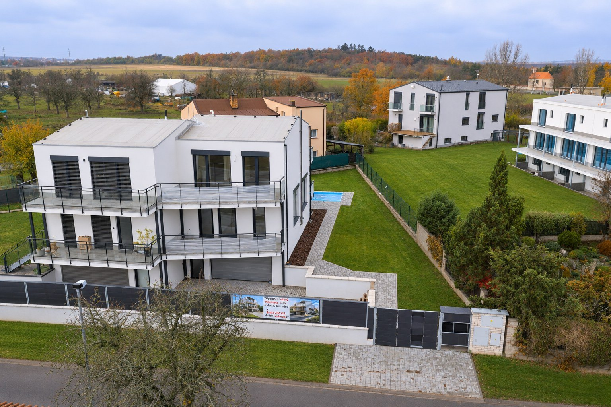
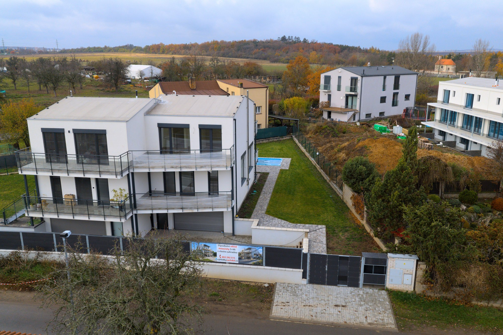
PŘEDPO
Proč: Franta: test – stejné zadání v ChatGPT pro srovnání s naší metodou
Co se změnilo: Hromada hlíny, suchá tráva a stavební materiál na sousedním pozemku nahrazeny posekaným trávníkem; záhon u domu vpravo zasypán kůrou; pás u silnice (páska, hlína, plevel) nahrazen travnatým pásem.
Výhrada: Záběr neposunut (dům, plot, sousední domy sedí, odhad do ~4 px). Všechny 3 změny provedeny, bazén ani cesta nepřidány. Vady: jehličnany a keře v popředí vpravo PŘEKRESLENY (jiný tvar, vznikl vysoký sloupovitý jehličnan), vpravo za plotem přibyl živý plot/keře, zmizela červená konstrukce u sousedního domu, nový trávník je jednolitý a sytější, jemné detaily větví a drobné stavby v dálce zjednodušené. Výstup má jen 1536 px (originál 12288 px = 12 %) – pro dron prakticky nepoužitelné bez AI upscalu. Rozlišení výstupu 1536x1024 px.
56 ChatGPT test dělal: GPT-6 (Astra)
PŘEDPO
Proč: Franta: test – stejné zadání v ChatGPT pro srovnání s naší metodou
Co se změnilo: Hromada hlíny a suchá tráva na sousedním pozemku nahrazeny rovným trávníkem; záhony u domu a nepořádek před plotem u silnice nahrazeny kůrou / travnatým pásem.
Výhrada: Záběr neposunut (dům, sousední dům, bazén sedí, odhad do ~5 px). Všechny změny provedeny, bez vymyšleného bazénu/cesty. Vady: překreslené okno na pravé stěně domu (jiný odlesk, zelenavé sklo), skalka a jehličnany vpravo dole přetvořeny (jiné tvary rostlin), změněná plachta bazénu, hladší textura střech a trávy; výstup jen 1448x1086 px (originál 8056 px = 18 %) – pro dron málo. Rozlišení výstupu 1448x1086 px.
68 ChatGPT test dělal: GPT-6 (Astra)
PŘEDPO
Proč: Franta: test – stejné zadání v ChatGPT pro srovnání s naší metodou
Co se změnilo: Hromada hlíny, suchá tráva a stavební materiál (palety, IBC nádrž, zelené balíky, prkna) na sousedním pozemku za domem nahrazeny rovným posekaným trávníkem.
Výhrada: Záběr neposunut (dům, střecha, sousední stavby sedí, odhad do ~4 px), změna přesně dle zadání, bazén/cesta/objekty nepřidány. Vady: ostrůvek keřů a kamenů vlevo dole u střechy zmizel (i mimo hromadu), plot pozemku a stíny v trávníku vypadají přegenerované (jiná struktura), bazén a jeho okolí mírně změněné, vzdálená auta/dílna a keře v pozadí zjednodušené; celkově měkčí obraz; výstup jen 1086x1448 px (originál 8056 px na výšku = 18 %). Rozlišení výstupu 1086x1448 px.
73 ChatGPT test dělal: GPT-6 (Astra)
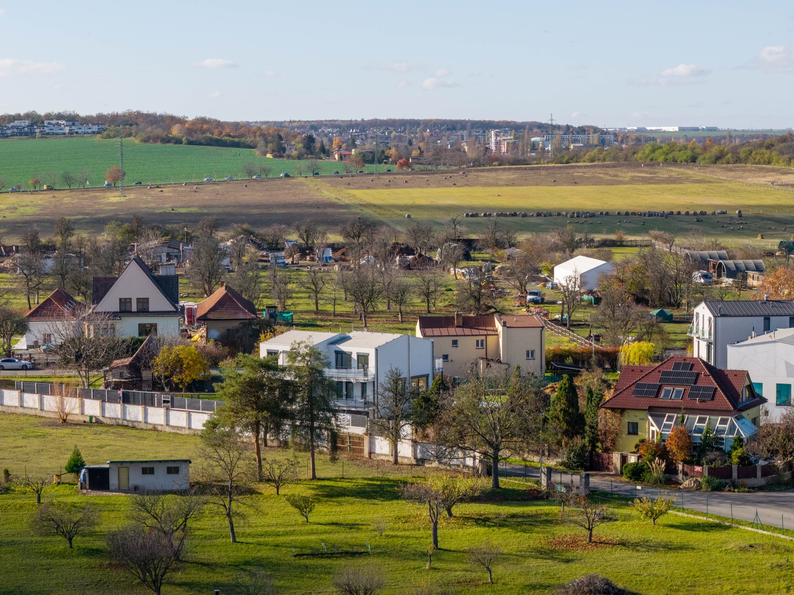
PŘEDPO
Proč: Franta: test – stejné zadání v ChatGPT pro srovnání s naší metodou
Co se změnilo: Zadání (hromada/hlína u sousedů, záhony, pás před plotem) na této širší fotce působí jen drobně: ChatGPT vyčistil hnědé plochy a nepořádek v zahradách sousedů a sjednotil trávu.
Výhrada: Záběr neposunut (domy, plot, silnice sedí, odhad do ~5 px), žádné velké vymyšlené objekty. Vady: stromy a ovocné stromky v popředí PŘEKRESLENY (jiné větvení a rozmístění), drobná zástavba, auta a kůlny v pozadí zjednodušené/posunuté o několik px, tráva sytější a hladší; změna oproti originálu je nízká a těžko čitelná, takže výsledek nelze považovat za jednoznačně splněné zadání. Výstup jen 1448x1086 px (originál 6313 px = 23 %). Rozlišení výstupu 1448x1086 px.
Exteriérové vizualizace 6
dron_0724 Dům a Praha v dálce z dronu dělal: Opus
PŘEDPO
Proč: p. Sládek (formulář): „asi ano, ale je to hodně potlačené tím trojdomem, podle mě by to chtělo bližší pohled upravit tu zahrádku u krajového trojdomu...protáhnout linii toho šikmého plotu v její rovině“
Co se změnilo: BLIŽŠÍ POHLED (výřez A): nový výřez z originálu DJI_0724 v plném rozlišení (8056 px), oblast x 1817–6484, y 950–4450 (4667 × 3500 px) zmenšená na 2560 × 1920 – dům B ~1,8× větší, Praha (Pankrác, Hrad) zůstává nahoře, trojdům jen roh střechy vlevo dole. Z originálu je vše kromě 6 zón z 1 generace NB Pro 2K Unlimited (zarovnání 0,96 px, doostřeno na detail originálu): čisté sklo 4 balkonů domu B (bez fólie), bazén s vodou a světlým lemem bez plachty a stavebního pletiva, dlažba, záhon u domu, zahrádka před bazénem místo zarostlého svahu (trávník + nízký živý plot), pás trávníku s keři podél šikmého pletivového plotu vpravo – plot vede rovně ve své linii až k dolnímu okraji. Hnědá zástěna s podezdívkou za bazénem, horní terasy, sousedé a schodiště vlevo z originálu. OPRAVA 19. 11. (audit, nález 2): vrácen poklop technické šachty vpravo od bazénu – obrys přesně podle modré desky v originálu DJI_0724, provedení jako na 0741 (zadlážděný poklop v rámečku: dlažba vizualizace uvnitř, tenká spára a světlá hrana rámu, stíny stromu zachované); kresba v obrysu, ne generace, vloženo bezeztrátově (změna jen 1599–1727 × 1711–1760 px).
Výhrada: Výklad „šikmý plot“ = pletivový plot domu B vpravo, šikmý k domu (podle situace S1B) – POTŘEBA POTVRDIT u p. Sládka. Dole podél živého plotu zůstalo pletivo se sloupky (z generace). Boční schodiště vlevo od domu je zatím původní (čeká na render z nového modelu). Malé skleněné výplně na levé straně domu mají ještě fólii (malé, mimo zóny). Po změně výřezu nejde srovnávat pixel s kolem 4 – před/po ukazuje kolo 4 zvětšené na stejný výřez. Poklop je dokreslený rámeček (19. 11.) – při 100 % jemná kresba hran. Lehátka, slunečník a balkonový nábytek (jsou na 0741) NEDOPLNĚNY – šlo by jen novou generací zahrady, kterou jsem kvůli riziku přestavby (2. generace 18. 11. přidala terasy) nedělal.
P1194761 Dům od vjezdu se schodištěm dělal: Opus
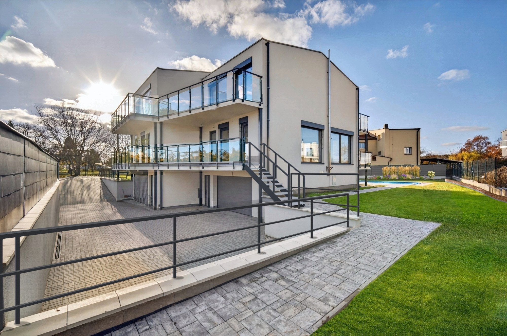
PŘEDPO
Proč: p. Sládek (formulář): „naznačit nízké schodiště? a zábradlí na zídkách-bude muset být...“ · schůdky zatím ne (neznáme výšku dlažby)
Co se změnilo: Varianta A: jednoduché ocelové zábradlí v antracitu (barva podle schodiště domu), bez skla – sloupky 40 mm à ~1,3 m, madlo a 2 vodorovné pásnice. Na přední zídce (horní dlažba → dvůr, po celé viditelné délce) cca 1 m nad horní dlažbou a na bílé zídce u paty schodiště (vyšší pás → dvůr) od paty schodiště po konec zídky. Kresba v perspektivě fotky (kalibrovaná kamera kola 3, svislice svislé, výška oka 1,55 m – odhad), 4× vyhlazené hrany, zrno, kontaktní stín patek; jen pixely zábradlí, zbytek bezeztrátově z kola 4. Schodiště beze změny. | VÝSADBA 20. 11. (Franta: „v té 17ce fotce chybí pás kůry u plotů“): (1) podél šedého panelového plotu za bazénem u paty bílého soklu úzký záhon podle bible výsadby – třtina 'Karl Foerster', levandule, šalvěj, dochan, buxus, rozchodník, 1 hortenzie latnatá (z 2. generace NB Pro 2K Unlimited, výřez, zarovnání 0,36 px); (2) podél pravé zídky se zeleným pletivem (severní hranice = stejný pás jako na 0788/0790/0741) pás tmavé kůry ~0,8 m v perspektivě se světle šedým kovovým obrubníkem, BEZ rostlin (záložní řešení schválené koordinátorem): textura = skutečná kůra z 0788 (18. 11.) zmenšená podle vzdálenosti, jas podle trávníku hned pod pásem, kontaktní stín u paty zídky, tenký stín obrubníku; poloha paty zídky změřena v obraze. Vše bezeztrátově po blocích JPEG; zábradlí, schodiště, dlažba, dům, bazén, zídka, pletivo se sloupky a sousedé beze změny.
Výhrada: Výška zábradlí je odvozená z odhadu výšky oka (1,55 m) – nejistota ±10 %. Zábradlí je kresba (ploché profily s jednou světlou hranou), při 100 % méně plastické než renderované schodiště. Vlastní stín zábradlí na dlažbu nekreslen (slunce v protisvětle, stín by padal ke kameři – jen kontaktní stín patek). Varianta B se schůdky nevznikla – viz zpráva. | VÝSADBA 20. 11.: pravý pás je JEN kůra s obrubníkem, bez rostlin – 3 generace osázení neprošly (1. velký javor u kamery; 2. záhon 2–3× širší šikmo přes trávník + vyměněný plot; 3. i s namalovaným vodítkem kůry nakreslila záhon 3–4× širší a vyměnila pletivo za panely). Na 0788/0790/0741 je tentýž pás osázený (třtina, hortenzie) – na 0761 zatím ne; osázení by šlo jen jinou cestou (např. render z Blenderu / ruční retuš), Opus to nedělal. Javor J1 na 0761 záměrně NEPŘIDÁN (koordinátor). Kůra je kresba z reálné textury, při 100 % je obrubník čistá linka. Zadní pás (JZ plot) je jen na tomto pohledu. Předchozí verze: viz/kolo6/_v_pred_vysadbou_20-11/P1194761.jpg; mezistav jen se zadním pásem: vysadba_2011/prac/P1194761_jen_zadni_pas.jpg.
dron_0741 Dům se zahradou z dronu dělal: Opus
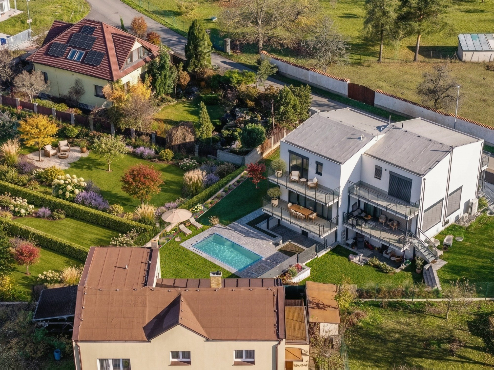
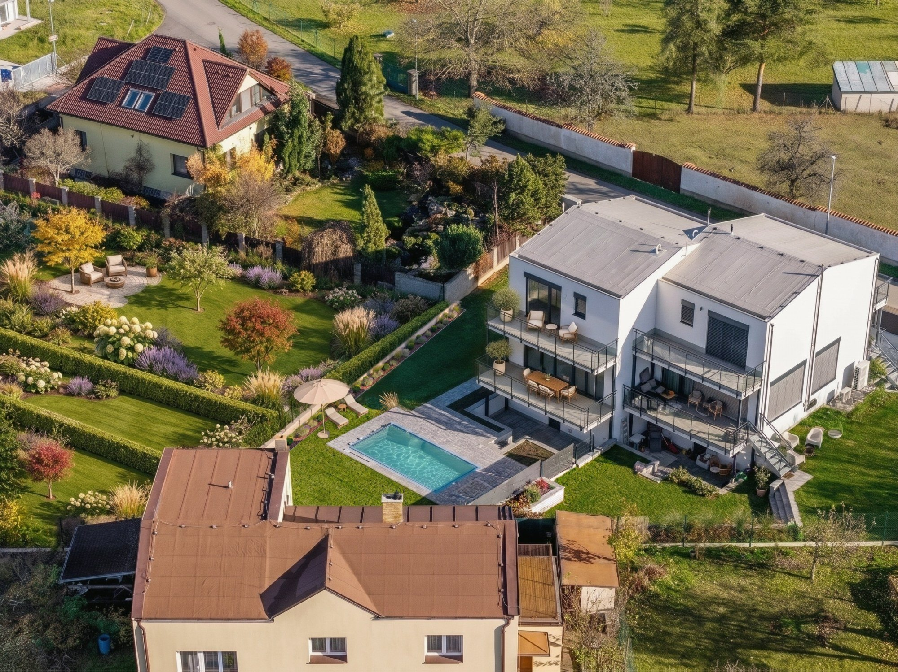
PŘEDPO
Proč: Náš návrh: Sládek se k tomuto dronu nevyjádřil – doplněný stejný záhon jako na zahradě s bazénem, ať sada sedí
Co se změnilo: VÝSADBA 20. 11. (p. Sládek: „proč vyšperkováváme okolní zahrady a náš objekt necháváme chudý“): záhon u severní zídky pod živým plotem osázen bohatě podle bible výsadby (vysadba_2011/bible_vysadby.json) – od komína dole po lehátka hustá výsadba (dochan/třtina, šalvěj, levandule, buxus, rozchodník, kovový obrubník) se 2 hortenziemi latnatými (u komína a za tyčí slunečníku, H1/H2), dál k domu původní nízký záhon; na trávníku u rohu domu červený javor dlanitolistý (~2,5 m, J1, stejný strom jako na 0788/0790). 2 generace NB Pro 2K Unlimited jen výřezu 1050 × 700 (zarovnání 0,51 / 0,48 px): záhon z 2. generace (rostliny svisle zkrácené na výšku zídky, živý plot a jeho horní hrana zamčené z předchozí verze), javor z 1. generace. Vloženo jen v pásu záhonu + koruna javoru (33 500 px), bezeztrátově po blocích JPEG; slunečník, lehátka, stolek, komín, živý plot, sousední zahrada, dům, bazén, dlažba, truhlík u terasy beze změny.
Výhrada: Shora je výsadba nižší a méně výrazná než ze země (trsy trav zkrácené, aby nezakryly živý plot) – vysoká řada třtiny z 0788 tu působí jako nízký pás. Hortenzie H3 u lehátek tu není samostatně čitelná. Javor stojí v rozptylu ~1,5 m oproti 0788/0790 (odhad zpětnou projekcí). Jižní pás (u domu A) je z tohoto pohledu pod střechou v popředí – beze změny. Truhlík u terasy a čtvercový záhon s hlínou u 1.PP NEMĚNĚNY (mimo zadání; generace tam posunula trávník – nepřevzato). Předchozí verze: viz/kolo6/_v_pred_vysadbou_20-11/.
P1194788 Zahrada s bazénem dělal: Opus
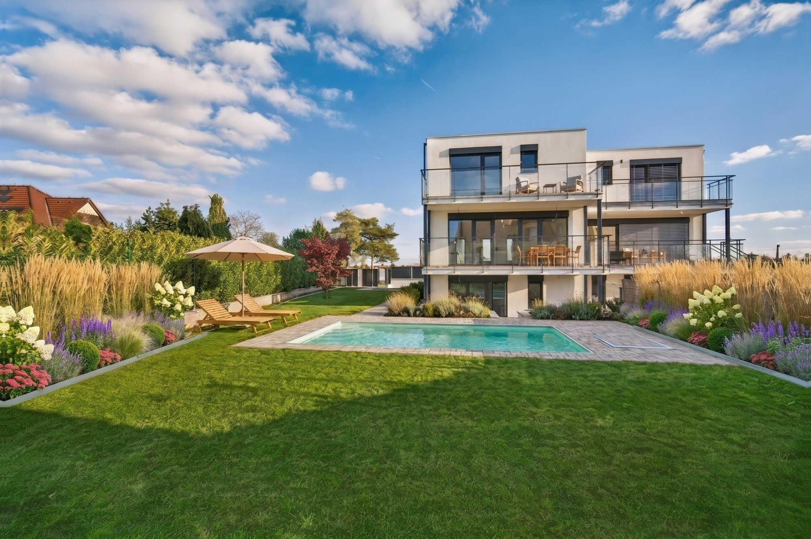
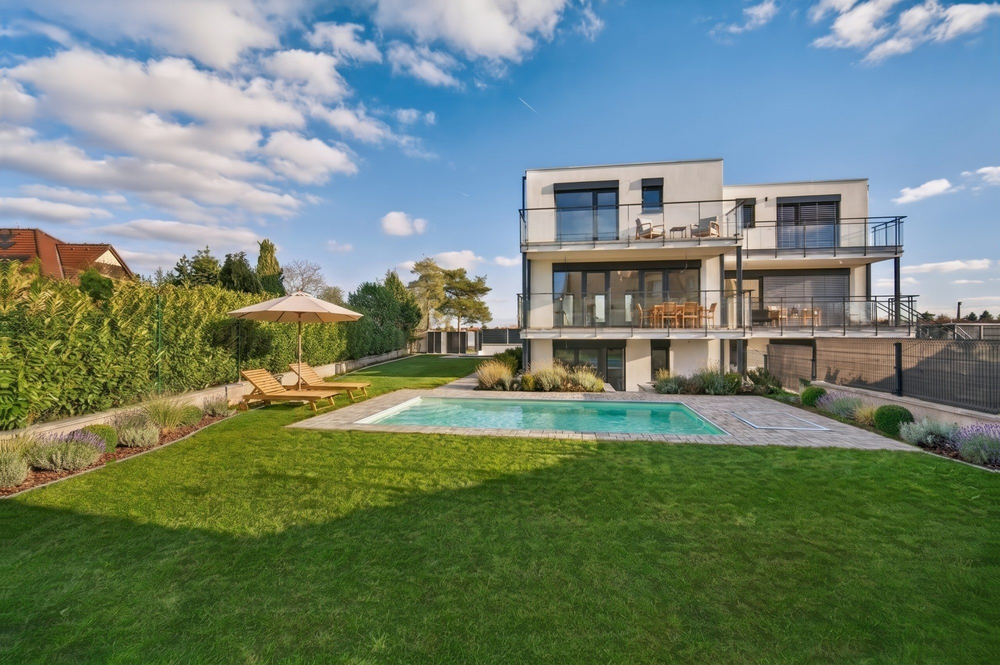
PŘEDPO
Proč: p. Sládek (formulář): „Určitě vylepšit trávu a okolo plotů výsadbu, jinak je to hrozně strohé a vpravo nějaký živý plot...“ · do telefonu Frantovi: rostliny / záhony po stranách pozemku u plotů · Franta 18. 11. (oprava): pruhy kůry s okrasnými záhony po stranách u plotů místo nových záhonů
Co se změnilo: VÝSADBA 20. 11. (p. Sládek: „proč vyšperkováváme okolní zahrady … a náš objekt necháváme chudý“) – VZOR bible výsadby: oba pásy kůry podél opěrných zídek (poloha a šířka ~0,8 m a obrubník z 18. 11. beze změny) osázeny hustě a pestře: vzadu u zídky souvislá řada třtiny 'Karl Foerster' (slámové klasy, přesahuje hranu zídky před živým plotem / kovovým plotem), uprostřed šalvěj, levandule, dochan, šanta, vpředu buxusové koule a rozchodník; 3 hortenzie latnaté (levý pás u levého okraje a před lehátky, pravý pás uprostřed) a v rohu za koncem levé zídky (vpravo od slunečníku) menší červený javor dlanitolistý ~2,5 m. 2 generace NB Pro 2K Unlimited z této verze (zarovnání 0,74 / 0,85 px): pásy a rostliny nad hranou zídek z 2. generace (výběr podle barevné změny, ne textury plotu), javor z 1. generace (2. ho vynechala). Vloženo jen v pásech, nad nimi a koruna javoru (měkký okraj 1,6 px), bezeztrátově po blocích JPEG; trávník, bazén, dlažba, poklop, lehátka, slunečník, záhony u domu, zídky, živý plot, plot, dům, sousedé a nebe zamčené. Obrubník z generace ztlumen do šedé.
Výhrada: Javor je ze zahrady vidět jen korunou nad zídkou (stojí na pásu u severní fasády). Trsy trav v pravém pásu zakrývají spodní část kovového plotu. Rostliny jsou z generace (AI), ne z reálné fotky. Předchozí verze: viz/kolo6/_v_pred_vysadbou_20-11/.
P1194790 Bazén a terasy dělal: Opus
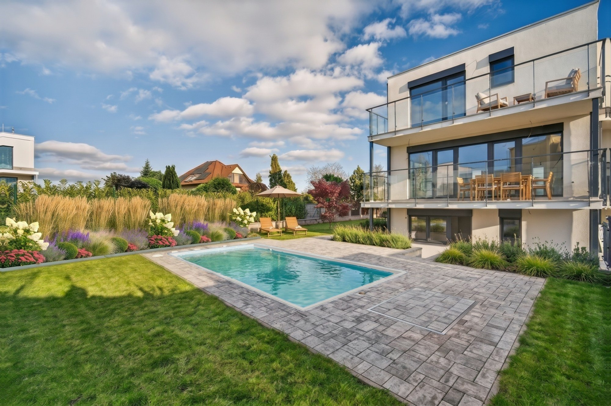
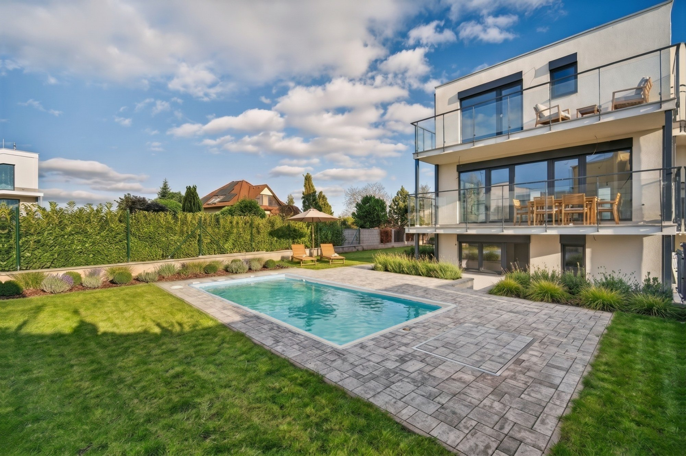
PŘEDPO
Proč: p. Sládek (formulář): „Ano, trochu vylepšit trávu, jako na předních pohledech a podle plotu nějakou výsadbu“
Co se změnilo: VÝSADBA 20. 11. (p. Sládek „Dtto s výsadbou…“): stejná výsadba jako na nové 0788 (vzor nahrán jako reference) – levý pás u zídky pod živým plotem od levého okraje po lehátka: řada třtiny, šalvěj, levandule, dochan, buxus, rozchodník, kovový obrubník, 2 hortenzie latnaté (H1 u levého okraje, H2 vlevo od rohu bazénu) a třetí u lehátek (H3); vpravo od slunečníku červený javor dlanitolistý (J1). 1 generace NB Pro 2K Unlimited z této verze (zarovnání 0,82 px), vložen jen pás záhonu, rostliny nad zídkou (podle barevné změny) a koruna javoru, bezeztrátově po blocích JPEG; dlažba, bazén, poklop, lehátka, slunečník, dům, záhony u domu, živý plot a nebe zamčené.
Výhrada: Jižní pás (u domu A) z tohoto pohledu vidět není (za kamerou). Hortenzie H3 u lehátek je na 0788 zakrytá lehátky – na 0790 je vidět. Javor oproti 0788 v rozptylu ~1,5 m (odhad zpětnou projekcí kalibrovaných kamer). Předchozí verze: viz/kolo6/_v_pred_vysadbou_20-11/.
P1194788_vecer Zahrada s bazénem – večer dělal: Opus
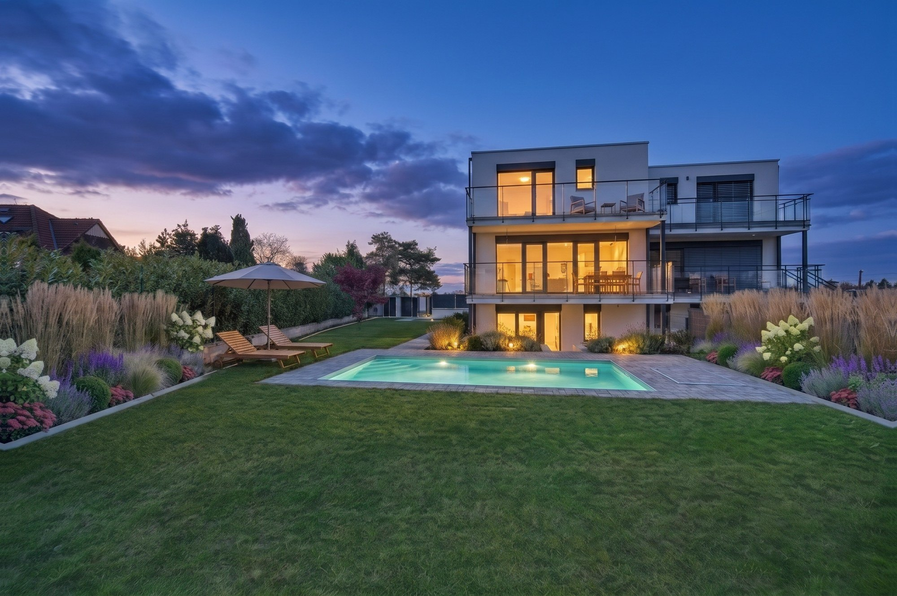
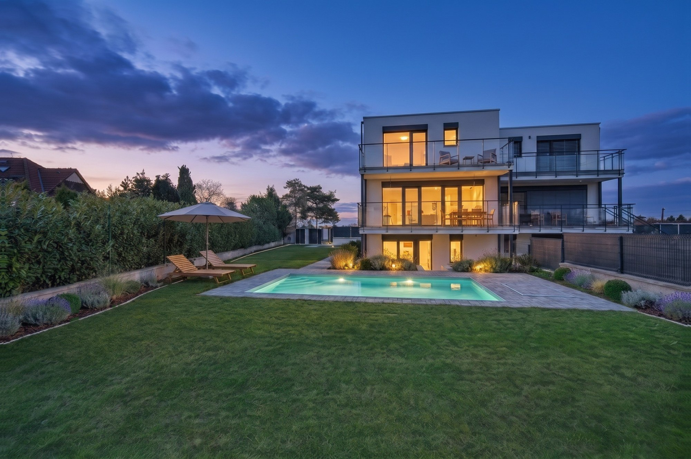
PŘEDPO
Proč: Náš návrh: stejná výsadba jako na denní verzi (Sládek: „Určitě vylepšit trávu a okolo plotů výsadbu, jinak je to hrozně strohé a vpravo nějaký živý plot...“), ať den a večer sedí · Franta 18. 11. (oprava): pruhy kůry s okrasnými záhony po stranách u plotů místo nových záhonů
Co se změnilo: VÝSADBA 20. 11. (p. Sládek „Výsadba…“): stejná výsadba jako nová denní 0788 (denní verze nahrána jako reference „co kde roste“) – oba pásy u zídek hustě osázené (třtina, šalvěj, levandule, dochan, buxus, rozchodník, 3 hortenzie na stejných místech, obrubník) a červený javor za koncem levé zídky, ve světle modré hodiny bez nových světel. 1 generace NB Pro 2K Unlimited z večerní verze (zarovnání 0,85 px), vloženo stejnou maskou jako den + koruna javoru, nové rostliny lehce ztlumené do soumraku (jas −6 %, sytost −12 %), bezeztrátově po blocích JPEG; dům a okna, bazén se světly, dlažba, lehátka, slunečník, záhony u domu, zídky, ploty, nebe zamčené.
Výhrada: Hortenzie ve večerním světle mírně svítí (bílé květy) – záměr „glowing pale“, při 100 % o kousek světlejší než okolí. Předchozí verze: viz/kolo6/_v_pred_vysadbou_20-11/.
Interiéry podle výkresu 7
P1194937 Obývací prostor – hlavní pohled dělal: Opus
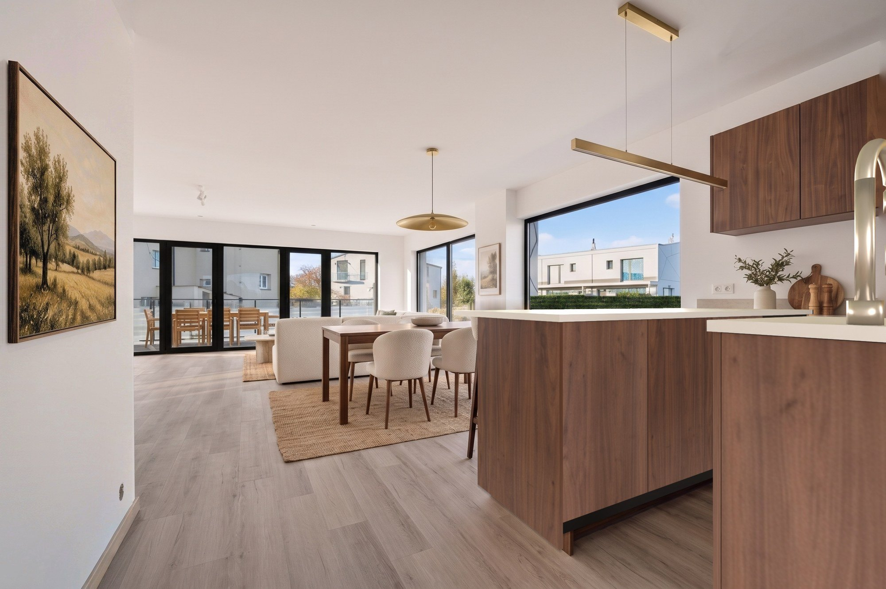
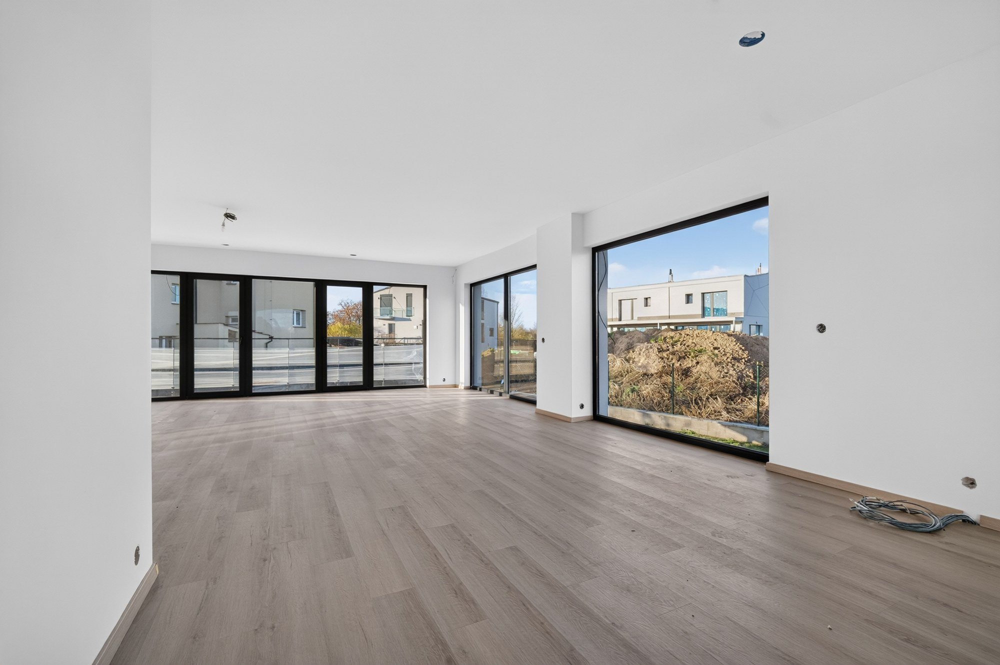
PŘEDPO
Proč: p. Sládek (formulář): „nábytek ( sedací soupravu) uzpůsobit půdorysnému rozmístění z výkresu“ · rozmístění podle jeho náčrtu z WhatsAppu 18. 11. · Franta 18. 11. (oprava): špatný přechod v levé třetině
Co se změnilo: OPRAVA 19. 11. odpoledne (Franta: „musí tam být ten ostrůvek … musí to být stejný“): Kuchyňské prvky jako fotorealistický render z Blenderu (Cycles) kalibrovanou kamerou fotky, rozměry přesně podle 3D modelu: rameno s pultem C (X −2,82…−2,22, y 4,18…6,41, deska v 0,94 m, převis desky 0,25 m na straně barových židlí), blok s dřezem D (X −1,67…−0,36, y 4,18…4,76) s kartáčovanou baterií v místě změřeném z pohledu 6, 3 barové židle F (bouclé, ořechové nohy) v půdorysu modelu. Ořechová dýha = textura dvířek vysokých skříní z pohledu 6, světlá kamenná deska v tónu desky z pohledu 6, tón ořechu sladěn s fotkou. Na 4 je C v pravé části z boku (čelní bok + 3 dvířka na východní straně, deska s převisem) a D podle modelu přímo v pravém popředí (1,1 m od objektivu, bok s dvířky, deska a baterie). Barové židle jsou podle modelu za pultem schované (opěradla 0,84 m < deska 0,94 m) – staré opěradla vykukující nad deskou odstraněna (sloupek dokreslen svisle, v okně pod živým plotem skutečný výhled z originálu). Ponechány dřívější opravy: bez vysokých skříní E (rozhodnutí Franty 19. 11.), obraz s olivovníkem, čiré zábradlí terasy, levý a pravý okraj. Vše ostatní beze změny, vloženy jen změněné bloky JPEG. Re-audit 19. 11. (č. 6): pruh hlíny a suti z originálu v okně nad pultem (x 1531–1966, y 854–898) nahrazen živým plotem navazujícím na stávající (textura spodní části plotu téhož výhledu, bez generace).
Výhrada: Na 4 skříně E záměrně nejsou (rozhodnutí Franty 19. 11.). Blok D v pravém popředí a velká baterie odpovídají modelu (fotograf stál 1,1 m od bloku) – v záběru dominují; alternativa: posun stanoviště. Převis desky C 0,25 m je doplněk proti modelu (dum_B.blend má převis 1 cm) – doporučuji zapsat do modelu. Textura ořechu na D zblízka měkčí (zvětšená). Předchozí verze: viz/kolo6i/_v10_pred_auditem_renderu/ (před re-auditem) a _v9_pred_renderem_kuchyne/.
P1194950 Obývací prostor – ke schodišti dělal: Opus
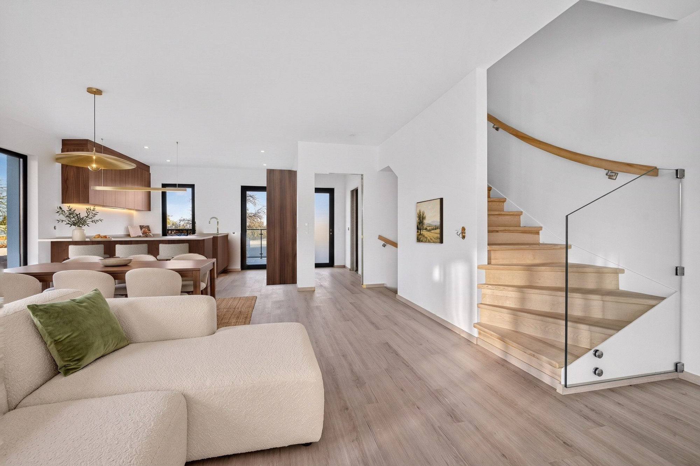
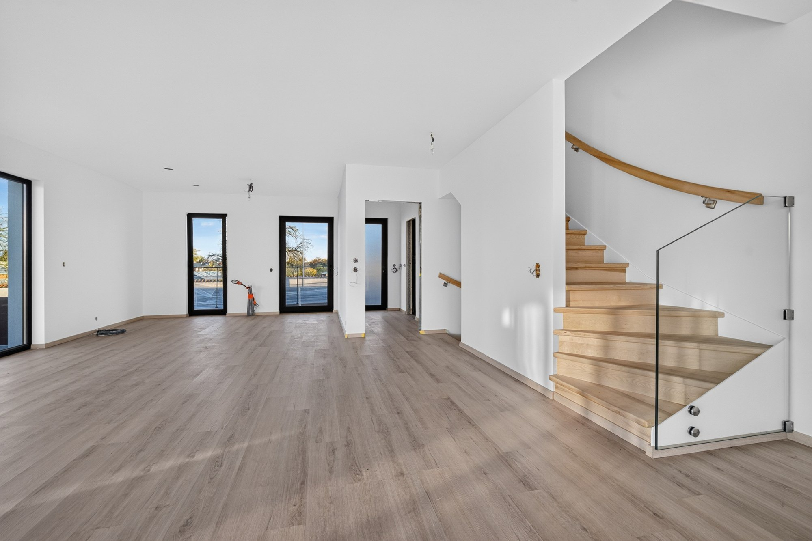
PŘEDPO
Proč: p. Sládek (formulář): „dtto, kuchyň udělat variantně podle výkresu, pokud to lze (líbí se mi víc), osadit posuvné dveře, hodící se k interiéru“ (dtto = sedačku podle půdorysu) · posuvné dveře zatím nevyšly · Franta 18. 11. (oprava): špatný přechod v levé třetině
Co se změnilo: OPRAVA 19. 11. odpoledne (Franta: „v 5 chybí ten ostrůvek“): Kuchyňské prvky jako fotorealistický render z Blenderu (Cycles) kalibrovanou kamerou fotky, rozměry přesně podle 3D modelu: rameno s pultem C (X −2,82…−2,22, y 4,18…6,41, deska v 0,94 m, převis desky 0,25 m na straně barových židlí), blok s dřezem D (X −1,67…−0,36, y 4,18…4,76) s kartáčovanou baterií v místě změřeném z pohledu 6, 3 barové židle F (bouclé, ořechové nohy) v půdorysu modelu. Ořechová dýha = textura dvířek vysokých skříní z pohledu 6, světlá kamenná deska v tónu desky z pohledu 6, tón ořechu sladěn s fotkou. Na 5 je C vzadu u okna jako samostatně čitelný pult s převisem a 3 barovými židlemi, vpravo blok D s baterií (stará baterie z generace odstraněna, místo vráceno z originálu), zbytky staré linky mimo obrys modelu vráceny z originální fotky. Jídelní stůl, židle, sedačka, mísa, váza s olivou, kniha a mísa s pečivem na pultu zůstávají vpředu (ruční masky zákrytu). Vysoké skříně E (bok) a oprava dveří z předchozí verze beze změny. Re-audit 19. 11. (č. 3): váza s olivou i mísa s pečivem posunuty o 15 px nahoru – stojí na horní ploše desky C; pod nimi čelo pultu z renderu, původní místo větviček vráceno ze stěny (bez generace). ÚPRAVA 19. 11. večer (Franta: „na 5 chybí ten obraz na stěně“): na bílé stěně vlevo od schodiště (vedle věšáku) visí týž obraz s olivovníkem jako na 4 a 6 – přenos kamerou ze 4, stejná 3D poloha jako na 6, žádná generace. Bok vysokých skříní E podle zkráceného modelu (západní bok v X −2,755, o 0,5 m dál – menší); proužek starého obrazu na stěně zádveří odstraněn (stěna vrácena).
Výhrada: Barové židle jsou renderované podle modelu (tvar zjednodušený, bouclé jemnější než u jídelních židlí); pod stolem zůstaly zbytky nohou původních židlí z generace (z velké části zakryté židlemi u stolu). Převis desky C 0,25 m je doplněk proti modelu. Předchozí verze: viz/kolo6i/_v10_pred_auditem_renderu/ (před re-auditem) a _v9_pred_renderem_kuchyne/. Obraz s olivovníkem je na 5 a 6 na stěně u schodiště, na 4 (bez skříní E) na stěně zádveří – v jednom záběru nikdy dvakrát (stěna u schodiště je z pohledu 4 zakrytá). Předchozí verze: viz/kolo6i/_v11_pred_zkracenim_E/.
P1194931 Jídelna a obývací část z kuchyně dělal: Opus
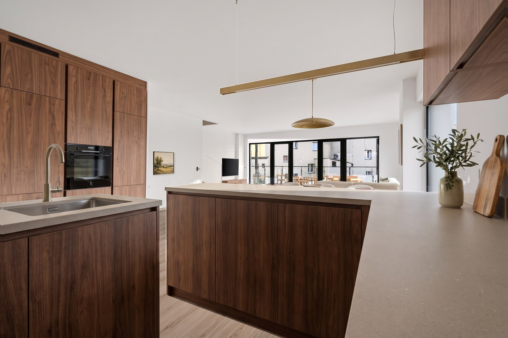
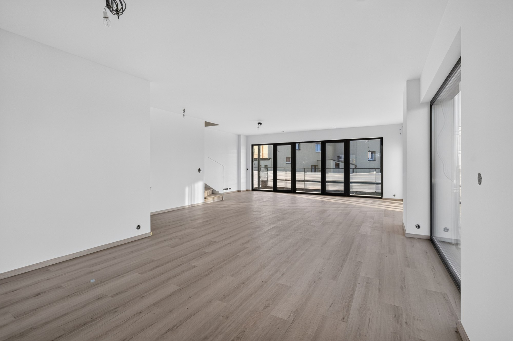
PŘEDPO
Proč: p. Sládek (formulář): „televizi se skříňkou mezi skleněným zábradlím a oknem“ · rozmístění podle jeho náčrtu z WhatsAppu 18. 11. · Franta 18. 11. (oprava): kuchyň úplně špatně + přechod v pravé třetině
Co se změnilo: OPRAVA 19. 11. (audit inzerát 30 + Franta „Chci to podle náčrtu.“): (1) VYSOKÉ SKŘÍNĚ S LEDNICÍ E u stěny zádveří přesně podle 3D modelu (X −3,25 až −1,45, výška 2,2 m, perspektiva kamery 6): ořechová čela bez úchytek, vestavěná černá trouba, integrovaná lednice a mraznička za dvířky, větrací mřížka nahoře. Textura čel z 1 generace z originálu (NB Pro 2K Unlimited, 1. pokus), přemapovaná do roviny čela kamerou 6 a doplněná o poslední sloupec dvířek, který generace vynechala (končila 0,5 m před koncem skříně) – výška a konec skříně jsou z modelu, ne z generace; generovaná mosazná baterie odstraněna (zůstala původní baterie linky). Skříně zakryly obraz s olivovníkem i světlý pruh s ostrou hranou nad dřezem. (2) Zábradlí terasy: místo mléčně ofoliovaného čiré bezrámové sklo mezi antracitovými sloupky a teakový set (výřezová generace z originálu, vloženo jen v zasklení). (3) TV už není ze tří čtvrtin za sklem schodiště: TV na zdi posunuta podle modelu do prostoru mezi konec skla schodiště a okno (TV i komoda z generace, sedí na obrys modelu); původní místo vráceno z originální fotky. Vše ostatní beze změny, bezeztrátově. ÚPRAVA 19. 11. večer (Franta: „skříň je moc dlouhá, jakoby o jedny dveře“): vysoké skříně E zkráceny o vzdálený sloupec dvířek u rohu haly – nově 3 sloupce (spíž, trouba, lednice), šířka 1,3 m (X −2,755…−1,45, výška 2,2 m beze změny); model dum_B.blend i plan.json upraveny stejně. Odkrytá stěna u schodiště je z dřívější verze (stavba z originálu) a visí na ní týž obraz s olivovníkem jako na 4 (přenos kamerou, žádná generace; stěna y 0,95, X −5,26…−4,64, výška a velikost jako na 4, boční hrana rámu a stín).
Výhrada: TV a komoda jsou proti uloženému modelu dum_B.blend posunuté o 0,72 m na západ (v souboru modelu je ještě původní poloha; obrys v archu je z renderu s posunem) – doporučuji posun zapsat i do modelu a plan.json. Komoda končí před oknem (v modelu má hloubku 0,73 m a sahala by do ostění okna). Barové židle z výšky oka nejsou vidět (podle modelu). Na pilíři vpravo malý obraz z dřívější generace. Předchozí verze: viz/kolo6i/_v7_pred_auditem/. Kontrola 19. 11.: vysoké skříně E nejsou větší než v modelu – horní hrana v obraze 4–7 px pod modelovou (2,2 m), pravý konec 1–4 px uvnitř (šířka 1,8 m, X −3,25…−1,45); velké působí blízkostí kamery (1,8–3,1 m). Pro posuvník je „před“ originální fotka. Verze s 1,8 m skříněmi: viz/kolo6i/_v11_pred_zkracenim_E/.
P1194836 Ložnice dělal: Opus
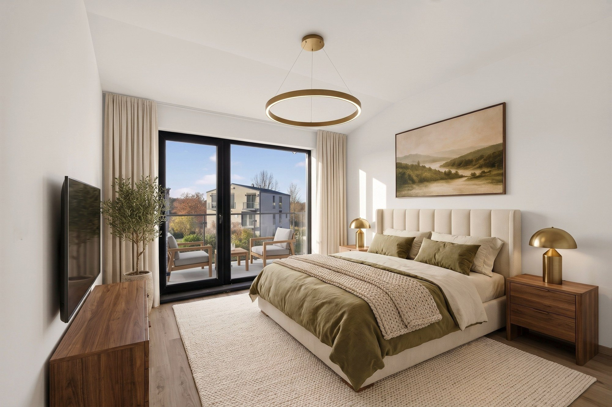
PŘEDPO
Proč: p. Sládek (formulář): „na stěnu s koupelnou skříňku s TV“ · rozmístění podle jeho náčrtu z WhatsAppu 18. 11.
Co se změnilo: Na stěnu ke koupelně (vlevo) nízká ořechová skříňka s TV na stěně proti posteli (Sládek). Manželská postel s čalouněným čelem u severní stěny, posunutá blíž k oknu podle výkresu, noční stolky po obou stranách. Záběr = originální fotka (současná verze měla jiný výřez). | BALKON 18. 11. večer (Franta: „na 7, 8 a 9 je to zábradlí nepředělaný … musí být nastageovaný ten balkon a to skleněný zábradlí správně“): ochranná fólie ze skleněného zábradlí odstraněna – čisté sklo mezi antracitovými sloupky s příchytkami a antracitovým madlem (stejný typ jako na exteriérových vizualizacích P1194790/P1194788), pohled skrz sklo do zahrad/krajiny, čistá světle šedá podlaha balkonu, střídmý staging: teaková křesla se světle šedými podsedáky a teakový stolek (jako horní balkon na exteriéru), nízko pod madlem. Metoda: 1 generace NB Pro 2K Unlimited (Higgsfield, 0 kreditů) ze schváleného základu sady, zarovnání na základ homografií (chyba 0,81 px), vložena JEN sklo pod madlem (bez rámů, bez postele a olivovníku) s měkkým okrajem 1,5 px po 16px blocích JPEG – mimo masku beze změny (0 px). Předchozí verze: viz/kolo6i/_v2_pred_dvermi/.
Výhrada: (Fólie na zábradlí balkonu – vyřešeno 18. 11. večer, balkon vyčištěný a nastagovaný.) Vestavěné šatní skříně u příčky (podle výkresu) stojí za fotografem – v záběru nejsou. | Výhled pod madlem (zahrada, keře, spodek sousedního domu) je z generace – v originále ho zakrývala fólie. Dveře v záběru ložnice nejsou (žádná zárubeň není vidět).
P1194864 Pokoj (dětský pokoj B2.3, 14,8 m²) dělal: Opus
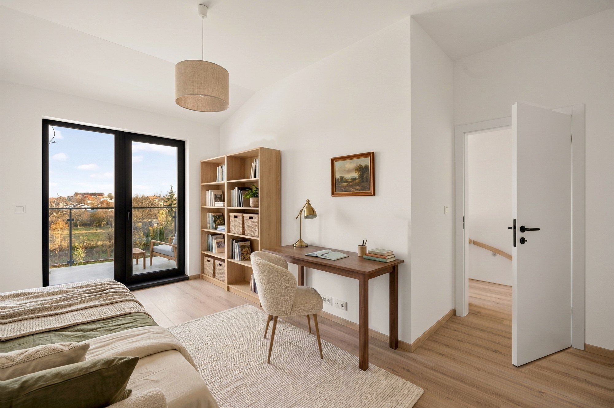
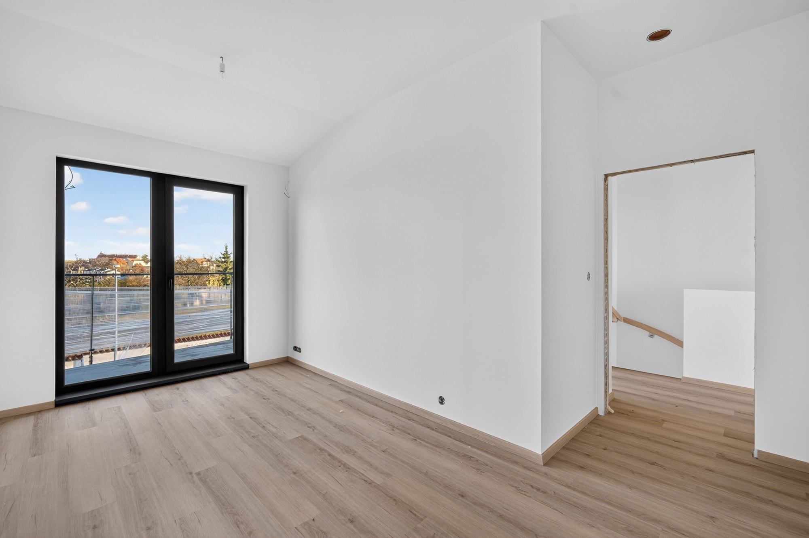
PŘEDPO
Proč: p. Sládek (formulář): „toto vůbec nesouhlasí s výkresem - posílám whatsappem, nemůžu sem přetáhnout screenshot“ · rozmístění podle jeho náčrtu z WhatsAppu 18. 11.
Co se změnilo: Úplně nové rozmístění podle náčrtu p. Sládka: místo manželské postele uprostřed je u příčky k jižnímu pokoji dlouhý psací stůl s křeslem, jednolůžko u severní stěny (v popředí vlevo, ořízlé záběrem). Fotka určena jako pokoj B2.3, focený od severozápadu (od šatních skříní) směrem k jihovýchodu – okno = balkonové dveře na východ, vpravo průchod do chodby se schodištěm. | DVEŘE 18. 11. večer (Franta: „na jedný chybí dveře … vyřeš“): do otvoru do chodby osazeny bílé hladké bezfalcové dveře (plné matné křídlo, skryté závěsy) v bílé obložkové zárubni, pootevřené dovnitř pokoje (~75°, závěsy vpravo – vypínač zůstává u kliky vlevo), černá klika na kulaté rozetě + černá rozeta zámku; kolem otvoru bílý obklad zárubně místo surového ostění s latí. Poloha a perspektiva křídla podle kalibrované kamery (nástřel 80/197 cm, dvere_balkon/upload/P1194864_nastrel_dvere.jpg). | BALKON 18. 11. večer (Franta: „na 7, 8 a 9 je to zábradlí nepředělaný … musí být nastageovaný ten balkon a to skleněný zábradlí správně“): ochranná fólie ze skleněného zábradlí odstraněna – čisté sklo mezi antracitovými sloupky s příchytkami a antracitovým madlem (stejný typ jako na exteriérových vizualizacích P1194790/P1194788), pohled skrz sklo do zahrad/krajiny, čistá světle šedá podlaha balkonu, střídmý staging: teaková křesla se světle šedými podsedáky a teakový stolek (jako horní balkon na exteriéru), nízko pod madlem. Metoda: dveře = 1 generace NB Pro 2K Unlimited ze schváleného základu s nástřelem (zarovnání 0,83 px), vloženy polygony po hranách zárubně a křídla; balkon = 2. generace jen výřezu okna (1. generace nechala na skle šedé pruhy jako fólie; zarovnání 0,61 px), vloženo sklo pod madlem. Měkký okraj 1,5 px, po 16px blocích JPEG, mimo masku beze změny. Předchozí verze: viz/kolo6i/_v2_pred_dvermi/. | DĚTSKÝ POKOJ 20. 11. (p. Sládek: „Nesouhlasí s půdorysem, jedná se o dětský pokoj, takže se předpokládá, že tam bude psací stůl, vedle to police, knihovna… tak jak je to v půdorysu“; Franta potvrdil): podél zadní stěny (příčka k jižnímu pokoji) podle náčrtu 2.NP: vysoká otevřená knihovna ze světlého dubu u balkonových dveří, ořechový psací stůl ~1,45 m s mosaznou lampičkou a čalouněnou židlí, nízká otevřená police ze světlého dubu vedle stolu (za rohem výstupku u dveří). Původní konzolový stolek, křeslo a váza pryč; obraz zůstal. Postel, koberec, balkon se skleněným zábradlím a dveře z minulé úpravy beze změny. Metoda: nábytek z náčrtu promítnut kalibrovanou kamerou (nástřel hmot, detske_pokoje/upload/), 1 generace NB Pro 2K Unlimited (0 kreditů) ze schváleného základu sady (_v4_pred_detskymi/) + moodboard sady A, zarovnání homografií (0,87 px), vložena JEN oblast nábytku podle mapy rozdílu měkkou maskou; zamčené: postel v popředí, balkonové dveře a balkon, dveře do chodby s klikou a chodba. Po 16px blocích JPEG, mimo masku beze změny (0 px). Před/po: před = originální fotka.
Výhrada: Šatní skříně u příčky k ložnici a skříň v SV rohu stojí podle výkresu mimo záběr (za fotografem / u levého okraje), proto v obraze nejsou; skříň, kterou generace dala do JV rohu, byla druhou úpravou odstraněna. Výstupek stěny je ve fotce ~0,9 m západněji než v modelu (DWG) – stůl je osazený od výstupku jako v náčrtu. | Výhled pod madlem (louka, keře) je z generace – v originále ho zakrývala fólie; svislá bílá tyč za fólií zmizela. Na horní hraně volného konce křídla je drobný schod (pár px, jen při 100 %). V zámku je klíč (z generace). V chodbě za dveřmi křídlo zakrývá bílou zídku schodiště, madlo schodiště zůstává vidět. | Nízkou polici dala generace (oba pokusy) na úzkou stěnu výstupku vedle dveří místo do řady na zadní stěně – zakrývá spodek levé zárubně dveří (v chodbě nestojí, průchod volný). Varianta bez této police je připravená: viz/kolo6i/detske_pokoje/P1194864_varianta_bez_police.jpg (stejná metoda, jen knihovna + stůl + židle). Šatní skříň v SV rohu a police u čela postele podle náčrtu stojí mimo záběr (za fotografem / vlevo za postelí). Knihovna je ~1 m široká, v náčrtu 1,0 m. 2 pokusy. | 20. 11.: použita varianta BEZ nízké police (audit: police stála přes zárubeň dveří).
P1194886 Pokoj s výhledem (dětský pokoj B2.2, 9,6 m²) dělal: Opus
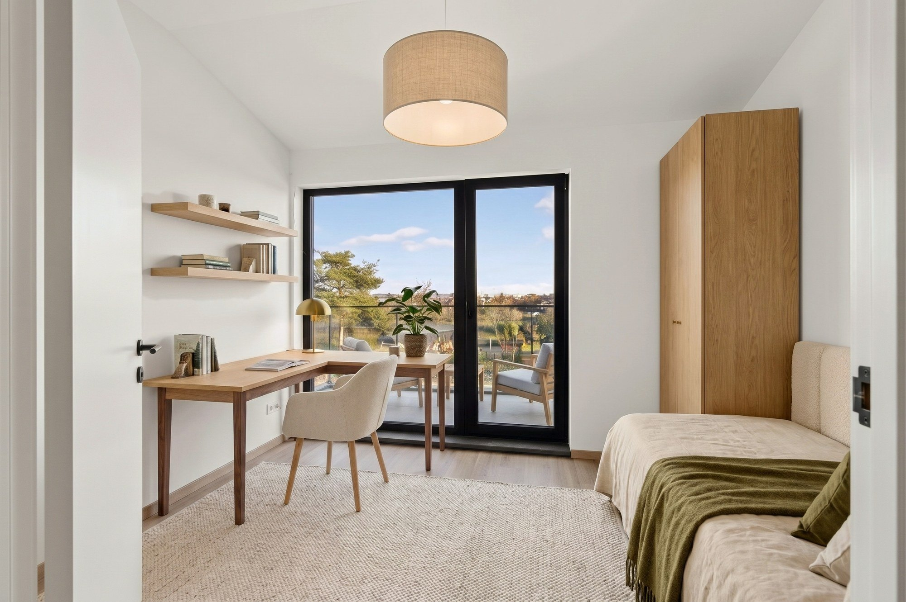
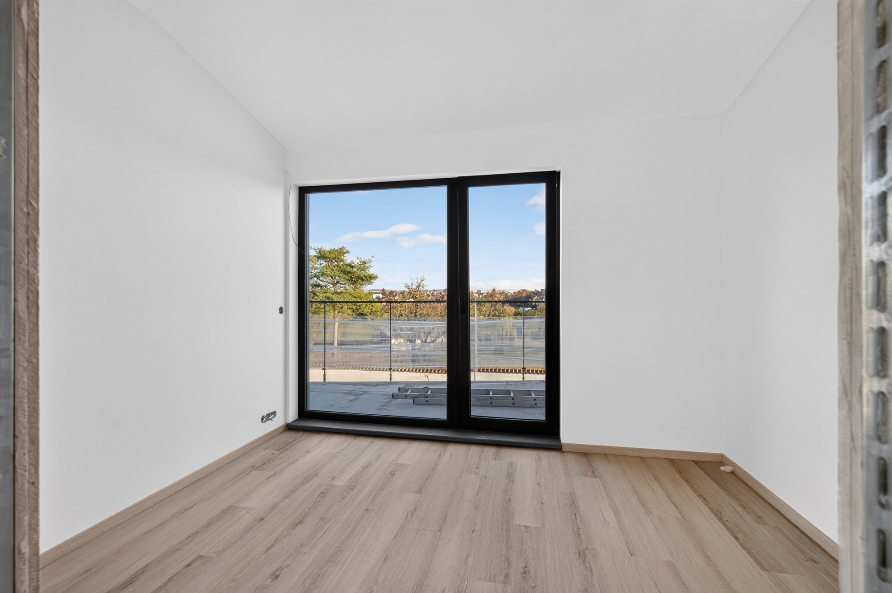
PŘEDPO
Proč: p. Sládek (formulář): „dtto“ (= nesouhlasí s výkresem) · rozmístění podle jeho náčrtu z WhatsAppu 18. 11.
Co se změnilo: Nábytek podle náčrtu p. Sládka: jednolůžko podél jižní stěny (vpravo), vysoká skříň v rohu u okna, psací stůl před levou částí balkonových dveří, křeslo se stolkem. Dříve byla postel u levé stěny a stůl jinde. Fotka určena jako pokoj B2.2, focená ze dveří od chodby (západ) k východnímu oknu. | DVEŘE 18. 11. večer (Franta: „na druhý jsou vidět futra bez dveří z obou stranách … vyřeš“): fotka je focená ze dveří – surová ostění na obou okrajích (omítka, holé cihly) nahrazena bílou obložkovou zárubní; vlevo bílé hladké bezfalcové křídlo otevřené dovnitř pokoje k levé stěně (černá klika na kulaté rozetě + rozeta zámku, stejné kování jako P1194864), vpravo na zárubni černý protiplech zámku. | BALKON 18. 11. večer (Franta: „na 7, 8 a 9 je to zábradlí nepředělaný … musí být nastageovaný ten balkon a to skleněný zábradlí správně“): ochranná fólie ze skleněného zábradlí odstraněna – čisté sklo mezi antracitovými sloupky s příchytkami a antracitovým madlem (stejný typ jako na exteriérových vizualizacích P1194790/P1194788), pohled skrz sklo do zahrad/krajiny, čistá světle šedá podlaha balkonu, střídmý staging: teaková křesla se světle šedými podsedáky a teakový stolek (jako horní balkon na exteriéru), nízko pod madlem. Žebříky z balkonu pryč. Metoda: 1 generace NB Pro 2K Unlimited (Higgsfield, 0 kreditů) ze schváleného základu sady, zarovnání na základ homografií (chyba 0,84 px), vložena JEN zárubeň + křídlo (polygony po hranách) a sklo pod madlem (bez rámů a bez nábytku v interiéru) s měkkým okrajem 1,5 px po 16px blocích JPEG – mimo masku beze změny (0 px). Předchozí verze: viz/kolo6i/_v2_pred_dvermi/. | DĚTSKÝ POKOJ 20. 11. (p. Sládek: „Dtto jako druhý pokoj: podle půdorysu… rohový psací stůl, police knihovna“; Franta potvrdil): v levém rohu ROHOVÝ psací stůl do L (světlý dub, ořechové nohy) – rameno podél pevného pole okna (ne před balkonovými dveřmi) a rameno podél levé stěny, čalouněná židle, nad stolem dvě nástěnné police ze světlého dubu s knihami (místo obrazu). Křeslo, kulatý stolek a rovný stůl pryč. Postel, šatní skříň, koberec, balkon se skleněným zábradlím a zárubeň s křídlem dveří z minulé úpravy beze změny. Metoda: nábytek z náčrtu promítnut kalibrovanou kamerou (nástřel hmot, detske_pokoje/upload/), 1 generace NB Pro 2K Unlimited (0 kreditů) ze schváleného základu sady (_v4_pred_detskymi/) + moodboard sady A, zarovnání homografií (0,79 px), vložena JEN oblast nábytku podle mapy rozdílu měkkou maskou; zamčené: zárubeň a křídlo dveří vlevo (x < 400), vše vpravo od x 1310 (balkonové dveře, skříň, postel, pravá zárubeň). Po 16px blocích JPEG, mimo masku beze změny (0 px). Před/po: před = originální fotka.
Výhrada: 1. generace prohodila postel a skříň – použita 2. generace s přesným popisem. Ořechový stůl je užší (cca 1,2 m) než v náčrtu (0,56 × 1,20 m – sedí). (Surová ostění dveří na krajích záběru – vyřešeno 18. 11. večer zárubní a křídlem.) | Křídlo vlevo sahá k hornímu okraji snímku, jeho horní hrana splývá se šikmým podhledem (kamera stojí v ostění, geometrie přibližná). Výhled pod madlem (zahrada se stromy) je z generace – v originále fólie; za květináčem je drobný oranžový předmět na sousední zahradě (z generace, cca 60 × 50 px). Červená lemovka u paty zábradlí z originálu zmizela. | Knihovna podle náčrtu stojí u příčky za otevřeným křídlem dveří – z místa fotografa ji není vidět, proto jsou „police knihovna“ v obraze jako nástěnné police nad stolem. Rameno stolu u stěny je v obraze ukončené křídlem dveří. Za stolem je přes pevné pole vidět křeslo na balkoně (z generace, stejný typ jako vpravo). 1 pokus.
P1184133 Garsonka u terasy dělal: Opus
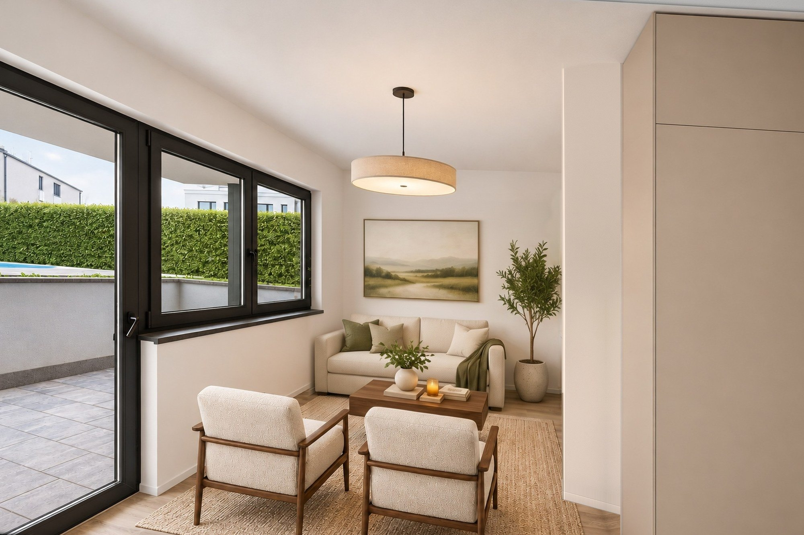
PŘEDPO
Proč: p. Sládek (formulář): „asi jen sedačku odsunout od kuch linky...“
Co se změnilo: Pohovka posunuta do levého rohu u okna, mezi ní a kuchyňskou linkou je volný pruh stěny (~0,8 m) s olivovníkem; obraz posunut nad pohovku. Vše ostatní (křesla, stolek, linka, skříň přes bojler, výhled na živý plot) beze změny ze schválené verze. | OPRAVA 19. 11. podle nezávislého auditu (nález k6i_P1184133 č. 1 – „hrana příčky posunutá, dokreslená kuchyňská nika“, od kola 2): čelo příčky u bojleru vráceno z ORIGINÁLU – svislá hrana zpět na x≈1797 (místo 1953), vpravo od ní plná stěna čelem ke kameře až k vysoké skříni, bílý sokl ve výšce a sklonu podle originálu, pod ním dubová podlaha základu. Dokreslená nika s linkou, dřezem, varnou deskou, policemi, LED a popínavkou ZRUŠENA; kuchyňka podle půdorysu stojí podél stěny ke garáži před příčkou, v tomto záběru za vysokou skříní (přes bojler) – v obraze z ní zůstává jen ta skříň (beze změny). Pohovka odsunutá od linky do rohu u okna, olivovník, obraz, křesla, stolek, koberec, okno a výhled beze změny (Sládek: „sedačku odsunout od kuch. linky“ platí). Metoda: pixely čela z originálu převedené poměrem kanálů na tón sady (strop + zadní stěna), bojler v originálu nahrazen zrcadleným pokračováním stěny, perforovaný rohový profil vyhlazen svislým mediánem; popínavka a konce polic vlevo od hrany pryč z 2. generace NB Pro 2K Unlimited (jen kde se liší od základu, tón srovnán); vkládáno po 16px blocích JPEG, mimo opravenou oblast beze změny (0 px). Předchozí verze: viz/kolo6i/_v3_pred_prickou/.
Výhrada: Upraveno přestylováním schválené vizualizace (3. pokus; z prázdné fotky generátor pohovku od linky neodsunul a ztratil živý plot ve výhledu). Mimo zónu zadní stěny jsou pixely ze schválené verze. Pohovka je kompaktnější (dvoused ~1,6 m). | Obě generace NB Pro (2 pokusy, nástřel s čelem příčky + 2. s originálem jako geometrickou referencí) kreslily příčku jako ustupující boční stěnu se šikmým soklem – do obrazu z nich šel jen pruh zadní stěny vlevo od hrany (bez popínavky); čelo je proto z originálu, ne z generace. Čelo je rovná bílá plocha bez textury navíc (v originálu je hladká omítka). Při zesílení kontrastu je vlevo od hrany nad olivovníkem slabě znát obrys původní popínavky (při 100 % neviditelné). Kuchyňská linka v záběru není (podle půdorysu je za vysokou skříní). Audit je potřeba pustit znovu (změnil se soubor).
3D model, půdorysy a pohledy 13
pudorys_1PP pudorys_1PP dělal: Opus
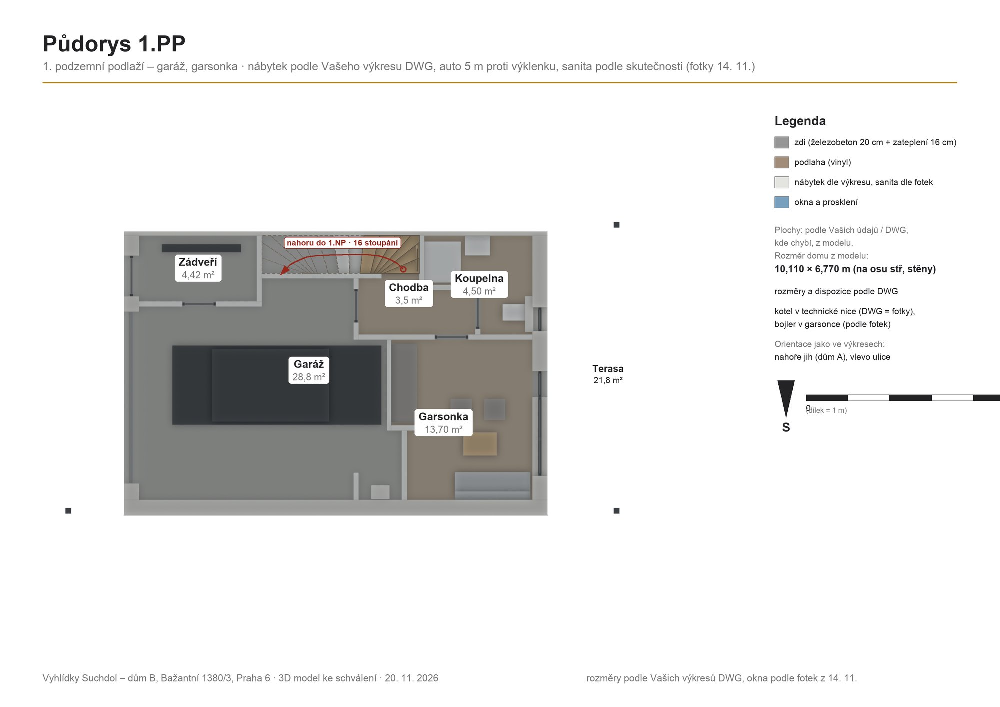
PŘEDPO
Proč: p. Sládek (formulář): „rozměry dtto jako v přízemí, kotel, bojler podle fotek, pokud bude TČ, přibude ještě akumulační nádrž (jako bojler)“
Co se změnilo: 20. 11. (připomínky p. Sládka): auto zvětšené na 5,0 × 1,9 m (v měřítku) a posunuté doprava (na západ): vjíždí vraty a čumákem končí ve výklenku garáže
pudorys_1NP pudorys_1NP dělal: Opus
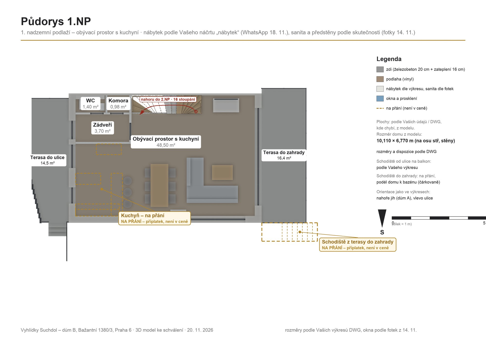
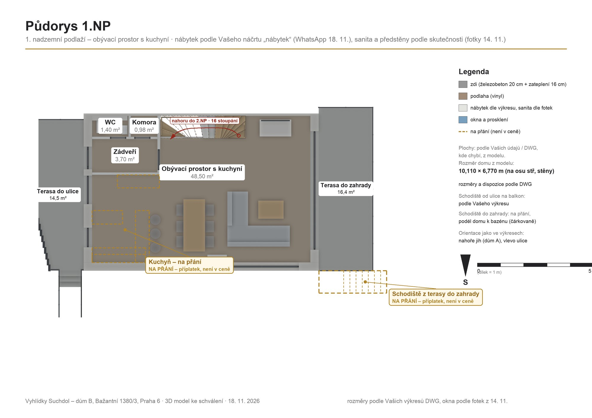
PŘEDPO
Proč: p. Sládek (formulář): „půdorysný rozměr bytu je 10,110m x6,770m ( vnější obrys na osu středové stěny)
boční schodiště k bazénu otočit o 90st směrěm k bazénu a s podestou...obývák s kuchyní 48,5m2, WC 1,4m2, zádveří 3,7m2, terasa do ulice-šikmá 14,5m2“ · nábytek podle jeho náčrtu z WhatsAppu
Co se změnilo: 20. 11. (připomínky p. Sládka): u venkovního schodiště na balkon jen jedno zábradlí (u domu) – jako hotové schodiště domu A; jinak beze změny
pudorys_2NP pudorys_2NP dělal: Opus
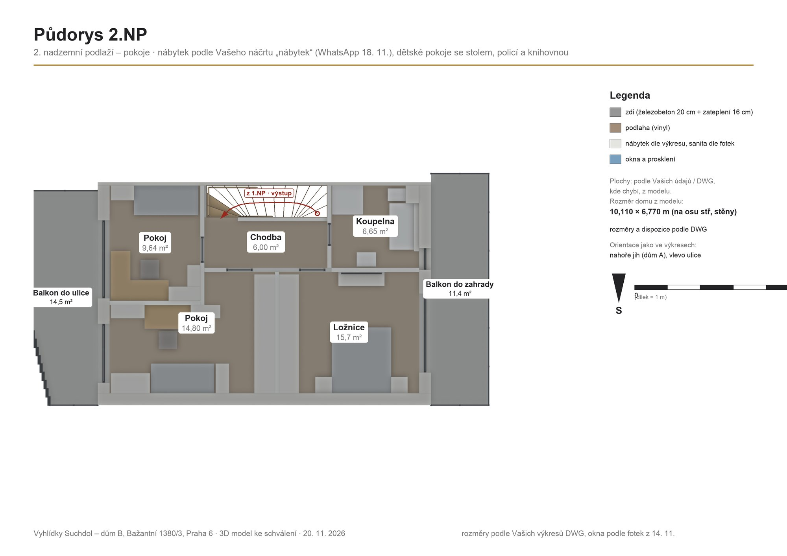
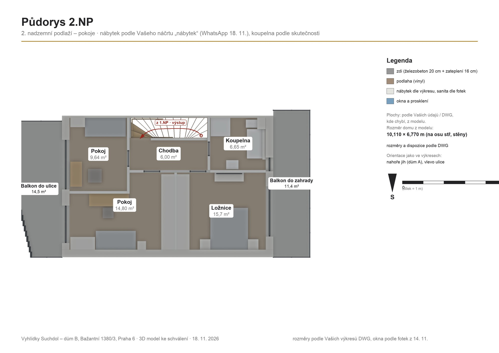
PŘEDPO
Proč: p. Sládek (formulář): „balkon do ulice 14,5m2, větší pokoj14,8m2, chodba 6m2, balkon 11,4m2, nabytek OK, jen do ložnice bych dal TV se skřínkou na stěnu ke koupelně“
Co se změnilo: 20. 11. (připomínky p. Sládka): dětské pokoje podle Vašeho náčrtu: menší (jižní) pokoj rohový psací stůl u okna, police a knihovna; větší (severní) pokoj podél příčky police – psací stůl – knihovna, police u postele; ložnice a koupelna beze změny
pohledy pohledy dělal: Opus
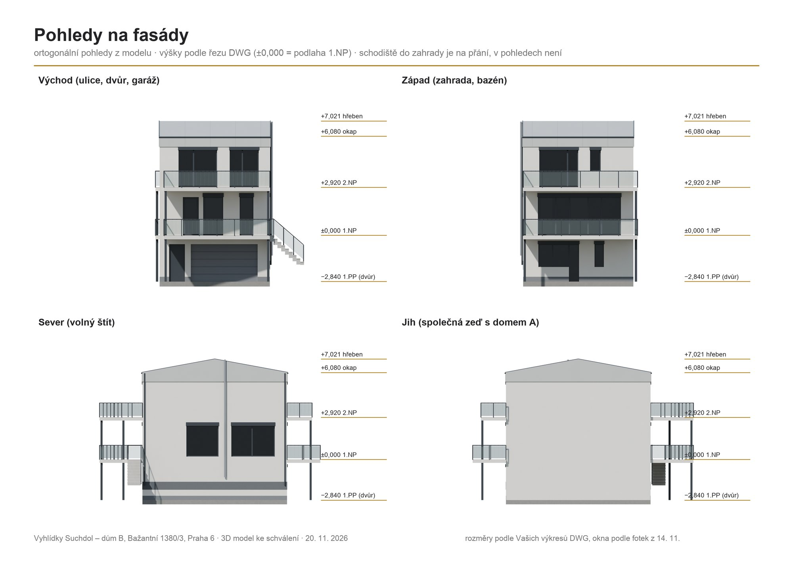
PŘEDPO
Proč: p. Sládek (formulář): „schodiště vlevo asi vypustit, bude za příplatek, jinak OK, ty sloupy uprostřed na východním pohledu odstranit, na severním pohledu odstranit prostřední sloup“
Co se změnilo: 20. 11. (připomínky p. Sládka): venkovní schodiště na balkon 1.NP jen s jedním zábradlím (u domu) – pohled východ a sever
axonometrie axonometrie dělal: Opus
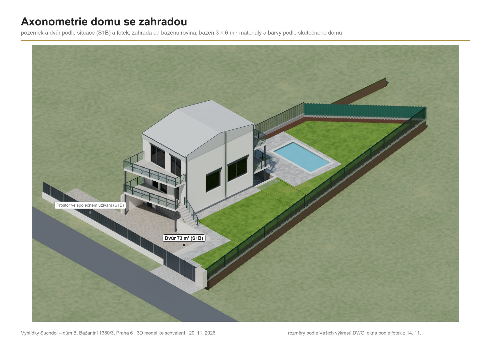
PŘEDPO
Proč: p. Sládek (formulář): „nesouhlasí dvůr se situací, od bazénu je rovina, ne svah, pravý plot je víc šikmý vůči domu (viz situace), sloupy uprostřed balkonů odstranit“
Co se změnilo: 20. 11. (připomínky p. Sládka): dvůr 73 m² podle S1B a fotek: před garáží 3 m a severně od domu až k chodníku od vstupu, bílé zídky s krycí deskou, schody z dvora na chodník, chodník od vstupu kolem dvora k domu; uliční zeď s plotem rovně po hranici, ulice +0,80 (DWG), u ulice dvoukřídlá brána s brankou, rám se schránkami a zděný pilíř s elektroměrem; před domem A „prostor ve společném užívání“, místo domu A neutrálně trávou; štítek „dvůr a ulice – orientačně“ zrušen, místo něj popisky ploch podle S1B; schodiště na balkon s jedním zábradlím
rozlozena_podlazi rozlozena_podlazi dělal: Opus
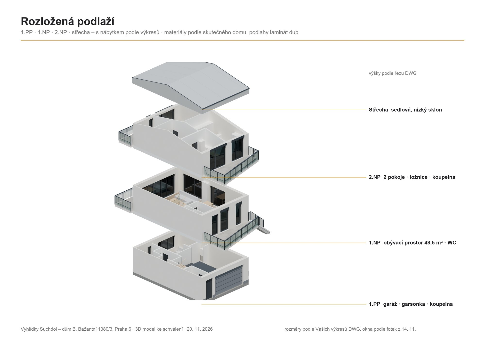
PŘEDPO
Proč: p. Sládek: „Souhlasí“ – změna jen kvůli rozměrům z jeho výkresů DWG (17.–18. 11.)
Co se změnilo: 20. 11. (připomínky p. Sládka): u venkovního schodiště na balkon 1.NP zůstalo jen zábradlí u domu (vpravo odstraněno – jako hotové schodiště domu A, dron 0674); auto 5 m proti výklenku; dětské pokoje 2.NP s novým nábytkem
rez_v_cene rez_v_cene dělal: Opus
PŘEDPO
Proč: p. Sládek (formulář): „plynový kotel není primárně záložní zdroj, je hlavní topné méedium, záložním zdrojem se stane pouze po instalaci TČ, rekuperační jednotka je umístěna ve výklenku v garáži (viz výkres), Loxone inteligentní domácnost v ceně v základním provedení-světla, ext. žaluzie ( pokud budou objednány), garážová vrata, vrátný k vrátkům ) detailní popis je na webu: vyhlidkysuchdol.cz - nadstavby dle přání za příplatky, Akumulační baterie není písečná, ale písková!!! Skládá se z hustého potrubí naplněného vodou, umístěného v pískovm loži, které je obaleno tepelnou izolací - bude aktivována pouze po instalaci fotovoltaiky avyužívána pro ekonomičtější ohřev TUV, zateplení -16 cm šedý fasádní polystyren,“
Co se změnilo: 20. 11. (připomínky p. Sládka): auto 5 m v garáži proti výklenku; dvůr v pozadí podle S1B
v_cene v_cene dělal: Opus
PŘEDPO
Proč: p. Sládek (formulář): „dtto jako v řezu“ (= jako v řezu)
Co se změnilo: stejné texty jako řez; nádrž, kotel, rekuperace a bojler podle DWG/fotek
na_prani_zahrada na_prani_zahrada dělal: Opus
PŘEDPO
Proč: p. Sládek (formulář): „přihřávání bazénu TČ, solnička, protiproud, schidště do zahrady otočit o 90 st směrem k bazénu (viz výkres¨), přídavná chladící jednotka k rekuperaci, propojení FVE s pískovou baterií, markýzy nad balkóny v 2.np“
Co se změnilo: 20. 11. (připomínky p. Sládka): severní pás a dvůr v pozadí podle S1B; schodiště na balkon s jedním zábradlím
na_prani_ulice na_prani_ulice dělal: Opus
PŘEDPO
Proč: p. Sládek: „dtto“ (jako zahrada) · p. Sládek (formulář): „přihřávání bazénu TČ, solnička, protiproud, schidště do zahrady otočit o 90 st směrem k bazénu (viz výkres¨), přídavná chladící jednotka k rekuperaci, propojení FVE s pískovou baterií, markýzy nad balkóny v 2.np“
Co se změnilo: 20. 11. (připomínky p. Sládka): dvůr, zídky, schody, chodník od vstupu a ulice podle S1B a fotek („Upravit axonometrii dvorku dle skutečnosti“); schodiště na balkon s jedním zábradlím
glb_poster glb_poster dělal: Opus
PŘEDPO
Proč: Náš krok: model přestavěný podle DWG výkresů p. Sládka (skutečné provedení, řez, situace)
Co se změnilo: 20. 11. (připomínky p. Sládka): otáčecí 3D model pro web (GLB ×4 přegenerováno): dvůr, vstup a ulice podle S1B a fotek, schodiště na balkon s jedním zábradlím, auto 5 m, dětské pokoje 2.NP podle náčrtu
konfigurator_zahrada_schodiste konfigurator_zahrada_schodiste dělal: Opus
PŘEDPO
Proč: p. Sládek (formulář): „přihřávání bazénu TČ, solnička, protiproud, schidště do zahrady otočit o 90 st směrem k bazénu (viz výkres¨), přídavná chladící jednotka k rekuperaci, propojení FVE s pískovou baterií, markýzy nad balkóny v 2.np“ · Franta z telefonu: schodiště natočit podél domu, ne ven
Co se změnilo: vrstva konfigurátoru „schodiště do zahrady“: podesta + rameno podél domu k bazénu (dřív ze severního konce terasy rovně ven)
konfigurator_rez_zaklad konfigurator_rez_zaklad dělal: Opus
PŘEDPO
Proč: p. Sládek (formulář): „plynový kotel není primárně záložní zdroj, je hlavní topné méedium, záložním zdrojem se stane pouze po instalaci TČ, rekuperační jednotka je umístěna ve výklenku v garáži (viz výkres), Loxone inteligentní domácnost v ceně v základním provedení-světla, ext. žaluzie ( pokud budou objednány), garážová vrata, vrátný k vrátkům ) detailní popis je na webu: vyhlidkysuchdol.cz - nadstavby dle přání za příplatky, Akumulační baterie není písečná, ale písková!!! Skládá se z hustého potrubí naplněného vodou, umístěného v pískovm loži, které je obaleno tepelnou izolací - bude aktivována pouze po instalaci fotovoltaiky avyužívána pro ekonomičtější ohřev TUV, zateplení -16 cm šedý fasádní polystyren,“
Co se změnilo: řez konfigurátoru: nové výšky, podzemní akumulační nádrž pod podlahou 1.PP, sauna mimo niku s kotlem